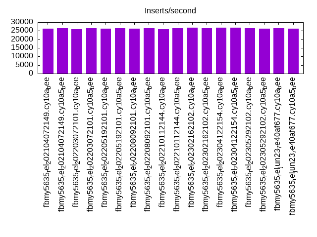
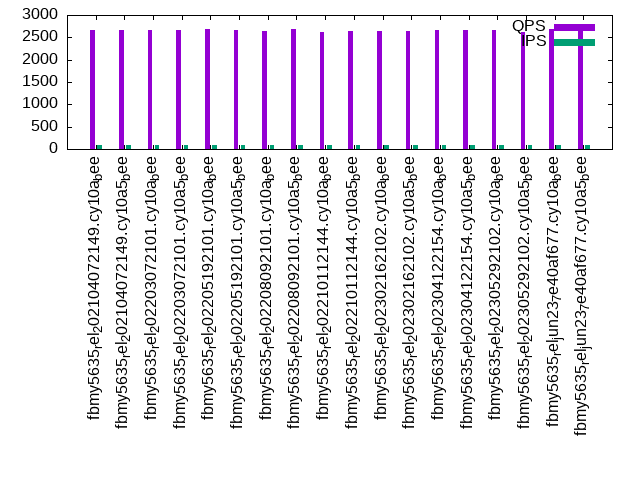

This is a report for the insert benchmark with 20M docs and 1 client(s). It is generated by scripts (bash, awk, sed) and Tufte might not be impressed. An overview of the insert benchmark is here and a short update is here. Below, by DBMS, I mean DBMS+version.config. An example is my8020.c10b40 where my means MySQL, 8020 is version 8.0.20 and c10b40 is the name for the configuration file.
The test server has 8 AMD cores, 16G RAM and an NVMe SSD. It is described here as the Beelink. The benchmark was run with 1 client and there were 1 or 3 connections per client (1 for queries or inserts without rate limits, 1+1 for rate limited inserts+deletes). It uses 1 table. It loads 20M rows per table without secondary indexes, creates secondary indexes, then inserts 100M rows per table with a delete per insert to avoid growing the table. It then does 3 read+write tests for 3600s each that do queries as fast as possible with 100, 500 and then 1000 inserts/second/client concurrent with the queries and 1000 deletes/second to avoid growing the table. The database is cached by the storage engine. Clients and the DBMS share one server. The per-database configs are in the per-database subdirectories here.
The tested DBMS are:
The numbers are inserts/s for l.i0 and l.i1, indexed docs (or rows) /s for l.x and queries/s for q*.2. The values are the average rate over the entire test for inserts (IPS) and queries (QPS). The range of values for IPS and QPS is split into 3 parts: bottom 25%, middle 50%, top 25%. Values in the bottom 25% have a red background, values in the top 25% have a green background and values in the middle have no color. A gray background is used for values that can be ignored because the DBMS did not sustain the target insert rate. Red backgrounds are not used when the minimum value is within 80% of the max value.
| dbms | l.i0 | l.x | l.i1 | q100.1 | q500.1 | q1000.1 |
|---|---|---|---|---|---|---|
| fbmy5635_rel_202104072149.cy10a_bee | 78125 | 82041 | 26144 | 2666 | 2637 | 2633 |
| fbmy5635_rel_202104072149.cy10a5_bee | 77220 | 82377 | 26603 | 2659 | 2616 | 2603 |
| fbmy5635_rel_202203072101.cy10a_bee | 75758 | 82377 | 25846 | 2670 | 2660 | 2613 |
| fbmy5635_rel_202203072101.cy10a5_bee | 78740 | 82716 | 26645 | 2667 | 2626 | 2613 |
| fbmy5635_rel_202205192101.cy10a_bee | 77519 | 81707 | 26178 | 2679 | 2654 | 2644 |
| fbmy5635_rel_202205192101.cy10a5_bee | 77821 | 82377 | 26596 | 2667 | 2650 | 2619 |
| fbmy5635_rel_202208092101.cy10a_bee | 78125 | 82377 | 26110 | 2631 | 2629 | 2621 |
| fbmy5635_rel_202208092101.cy10a5_bee | 78125 | 82041 | 26518 | 2680 | 2646 | 2649 |
| fbmy5635_rel_202210112144.cy10a_bee | 77220 | 82377 | 26035 | 2628 | 2608 | 2605 |
| fbmy5635_rel_202210112144.cy10a5_bee | 77821 | 83058 | 26497 | 2650 | 2609 | 2590 |
| fbmy5635_rel_202302162102.cy10a_bee | 78125 | 81376 | 26774 | 2638 | 2621 | 2623 |
| fbmy5635_rel_202302162102.cy10a5_bee | 77821 | 82041 | 26652 | 2642 | 2640 | 2606 |
| fbmy5635_rel_202304122154.cy10a_bee | 77220 | 82041 | 26716 | 2670 | 2624 | 2594 |
| fbmy5635_rel_202304122154.cy10a5_bee | 77519 | 82041 | 26940 | 2663 | 2615 | 2606 |
| fbmy5635_rel_202305292102.cy10a_bee | 75758 | 83058 | 26511 | 2674 | 2615 | 2612 |
| fbmy5635_rel_202305292102.cy10a5_bee | 76628 | 82716 | 26371 | 2626 | 2617 | 2620 |
| fbmy5635_rel_jun23_7e40af677.cy10a_bee | 77519 | 82041 | 26532 | 2688 | 2632 | 2619 |
| fbmy5635_rel_jun23_7e40af677.cy10a5_bee | 77821 | 82041 | 26344 | 2647 | 2605 | 2582 |
This table has relative throughput, throughput for the DBMS relative to the DBMS in the first line, using the absolute throughput from the previous table. Values less than 0.95 have a yellow background. Values greater than 1.05 have a blue background.
| dbms | l.i0 | l.x | l.i1 | q100.1 | q500.1 | q1000.1 |
|---|---|---|---|---|---|---|
| fbmy5635_rel_202104072149.cy10a_bee | 1.00 | 1.00 | 1.00 | 1.00 | 1.00 | 1.00 |
| fbmy5635_rel_202104072149.cy10a5_bee | 0.99 | 1.00 | 1.02 | 1.00 | 0.99 | 0.99 |
| fbmy5635_rel_202203072101.cy10a_bee | 0.97 | 1.00 | 0.99 | 1.00 | 1.01 | 0.99 |
| fbmy5635_rel_202203072101.cy10a5_bee | 1.01 | 1.01 | 1.02 | 1.00 | 1.00 | 0.99 |
| fbmy5635_rel_202205192101.cy10a_bee | 0.99 | 1.00 | 1.00 | 1.00 | 1.01 | 1.00 |
| fbmy5635_rel_202205192101.cy10a5_bee | 1.00 | 1.00 | 1.02 | 1.00 | 1.00 | 0.99 |
| fbmy5635_rel_202208092101.cy10a_bee | 1.00 | 1.00 | 1.00 | 0.99 | 1.00 | 1.00 |
| fbmy5635_rel_202208092101.cy10a5_bee | 1.00 | 1.00 | 1.01 | 1.01 | 1.00 | 1.01 |
| fbmy5635_rel_202210112144.cy10a_bee | 0.99 | 1.00 | 1.00 | 0.99 | 0.99 | 0.99 |
| fbmy5635_rel_202210112144.cy10a5_bee | 1.00 | 1.01 | 1.01 | 0.99 | 0.99 | 0.98 |
| fbmy5635_rel_202302162102.cy10a_bee | 1.00 | 0.99 | 1.02 | 0.99 | 0.99 | 1.00 |
| fbmy5635_rel_202302162102.cy10a5_bee | 1.00 | 1.00 | 1.02 | 0.99 | 1.00 | 0.99 |
| fbmy5635_rel_202304122154.cy10a_bee | 0.99 | 1.00 | 1.02 | 1.00 | 1.00 | 0.99 |
| fbmy5635_rel_202304122154.cy10a5_bee | 0.99 | 1.00 | 1.03 | 1.00 | 0.99 | 0.99 |
| fbmy5635_rel_202305292102.cy10a_bee | 0.97 | 1.01 | 1.01 | 1.00 | 0.99 | 0.99 |
| fbmy5635_rel_202305292102.cy10a5_bee | 0.98 | 1.01 | 1.01 | 0.98 | 0.99 | 1.00 |
| fbmy5635_rel_jun23_7e40af677.cy10a_bee | 0.99 | 1.00 | 1.01 | 1.01 | 1.00 | 0.99 |
| fbmy5635_rel_jun23_7e40af677.cy10a5_bee | 1.00 | 1.00 | 1.01 | 0.99 | 0.99 | 0.98 |
This lists the average rate of inserts/s for the tests that do inserts concurrent with queries. For such tests the query rate is listed in the table above. The read+write tests are setup so that the insert rate should match the target rate every second. Cells that are not at least 95% of the target have a red background to indicate a failure to satisfy the target.
| dbms | q100.1 | q500.1 | q1000.1 |
|---|---|---|---|
| fbmy5635_rel_202104072149.cy10a_bee | 100 | 499 | 998 |
| fbmy5635_rel_202104072149.cy10a5_bee | 100 | 499 | 998 |
| fbmy5635_rel_202203072101.cy10a_bee | 100 | 499 | 998 |
| fbmy5635_rel_202203072101.cy10a5_bee | 100 | 499 | 998 |
| fbmy5635_rel_202205192101.cy10a_bee | 100 | 499 | 998 |
| fbmy5635_rel_202205192101.cy10a5_bee | 100 | 499 | 998 |
| fbmy5635_rel_202208092101.cy10a_bee | 100 | 499 | 998 |
| fbmy5635_rel_202208092101.cy10a5_bee | 100 | 499 | 998 |
| fbmy5635_rel_202210112144.cy10a_bee | 100 | 499 | 999 |
| fbmy5635_rel_202210112144.cy10a5_bee | 100 | 499 | 998 |
| fbmy5635_rel_202302162102.cy10a_bee | 100 | 499 | 998 |
| fbmy5635_rel_202302162102.cy10a5_bee | 100 | 499 | 998 |
| fbmy5635_rel_202304122154.cy10a_bee | 100 | 499 | 998 |
| fbmy5635_rel_202304122154.cy10a5_bee | 100 | 499 | 998 |
| fbmy5635_rel_202305292102.cy10a_bee | 100 | 499 | 998 |
| fbmy5635_rel_202305292102.cy10a5_bee | 100 | 499 | 998 |
| fbmy5635_rel_jun23_7e40af677.cy10a_bee | 100 | 499 | 998 |
| fbmy5635_rel_jun23_7e40af677.cy10a5_bee | 100 | 499 | 998 |
| target | 100 | 500 | 1000 |
l.i0: load without secondary indexes. Graphs for performance per 1-second interval are here.
Average throughput:
Insert response time histogram: each cell has the percentage of responses that take <= the time in the header and max is the max response time in seconds. For the max column values in the top 25% of the range have a red background and in the bottom 25% of the range have a green background. The red background is not used when the min value is within 80% of the max value.
| dbms | 256us | 1ms | 4ms | 16ms | 64ms | 256ms | 1s | 4s | 16s | gt | max |
|---|---|---|---|---|---|---|---|---|---|---|---|
| fbmy5635_rel_202104072149.cy10a_bee | 99.869 | 0.128 | 0.003 | 0.002 | 0.073 | ||||||
| fbmy5635_rel_202104072149.cy10a5_bee | 99.867 | 0.129 | 0.004 | 0.001 | 0.071 | ||||||
| fbmy5635_rel_202203072101.cy10a_bee | 99.865 | 0.131 | 0.001 | 0.003 | 0.081 | ||||||
| fbmy5635_rel_202203072101.cy10a5_bee | 99.870 | 0.127 | 0.003 | 0.001 | 0.073 | ||||||
| fbmy5635_rel_202205192101.cy10a_bee | 99.868 | 0.128 | 0.003 | 0.001 | 0.084 | ||||||
| fbmy5635_rel_202205192101.cy10a5_bee | 99.868 | 0.128 | 0.003 | 0.001 | 0.069 | ||||||
| fbmy5635_rel_202208092101.cy10a_bee | 99.868 | 0.129 | 0.003 | 0.001 | 0.070 | ||||||
| fbmy5635_rel_202208092101.cy10a5_bee | 99.870 | 0.127 | 0.003 | 0.001 | 0.074 | ||||||
| fbmy5635_rel_202210112144.cy10a_bee | 99.868 | 0.128 | 0.003 | 0.002 | 0.072 | ||||||
| fbmy5635_rel_202210112144.cy10a5_bee | 99.868 | 0.129 | 0.003 | 0.001 | 0.070 | ||||||
| fbmy5635_rel_202302162102.cy10a_bee | 99.869 | 0.127 | 0.003 | 0.002 | 0.098 | ||||||
| fbmy5635_rel_202302162102.cy10a5_bee | 99.867 | 0.128 | 0.005 | 0.056 | |||||||
| fbmy5635_rel_202304122154.cy10a_bee | 99.867 | 0.128 | 0.004 | 0.001 | 0.071 | ||||||
| fbmy5635_rel_202304122154.cy10a5_bee | 99.867 | 0.129 | 0.004 | 0.055 | |||||||
| fbmy5635_rel_202305292102.cy10a_bee | 99.865 | 0.131 | 0.004 | 0.001 | 0.065 | ||||||
| fbmy5635_rel_202305292102.cy10a5_bee | 99.866 | 0.131 | 0.003 | 0.001 | 0.067 | ||||||
| fbmy5635_rel_jun23_7e40af677.cy10a_bee | 99.867 | 0.130 | 0.003 | 0.060 | |||||||
| fbmy5635_rel_jun23_7e40af677.cy10a5_bee | 99.867 | 0.128 | 0.005 | 0.001 | 0.065 |
Performance metrics for the DBMS listed above. Some are normalized by throughput, others are not. Legend for results is here.
ips qps rps rmbps wps wmbps rpq rkbpq wpi wkbpi csps cpups cspq cpupq dbgb1 dbgb2 rss maxop p50 p99 tag 78125 0 0 0.0 37.5 13.2 0.000 0.000 0.000 0.174 7676 22.6 0.098 23 0.7 1.8 0.2 0.073 78709 71618 20m.fbmy5635_rel_202104072149.cy10a_bee 77220 0 0 0.0 37.7 13.1 0.000 0.000 0.000 0.173 7602 22.5 0.098 23 0.7 1.8 0.2 0.071 77809 71318 20m.fbmy5635_rel_202104072149.cy10a5_bee 75758 0 0 0.0 36.6 12.8 0.000 0.000 0.000 0.173 7481 21.6 0.099 23 0.7 1.8 0.2 0.081 76611 69164 20m.fbmy5635_rel_202203072101.cy10a_bee 78740 0 0 0.0 37.8 13.3 0.000 0.000 0.000 0.173 7718 22.9 0.098 23 0.7 1.8 0.2 0.073 79159 71418 20m.fbmy5635_rel_202203072101.cy10a5_bee 77519 0 0 0.0 37.4 13.1 0.000 0.000 0.000 0.173 7612 22.7 0.098 23 0.7 1.8 0.2 0.084 78212 71519 20m.fbmy5635_rel_202205192101.cy10a_bee 77821 0 0 0.0 37.2 13.1 0.000 0.000 0.000 0.172 7634 22.7 0.098 23 0.7 1.8 0.2 0.069 78410 72021 20m.fbmy5635_rel_202205192101.cy10a5_bee 78125 0 0 0.0 37.7 13.2 0.000 0.000 0.000 0.174 7662 22.7 0.098 23 0.7 1.8 0.2 0.070 78713 70920 20m.fbmy5635_rel_202208092101.cy10a_bee 78125 0 0 0.0 37.5 13.3 0.000 0.000 0.000 0.174 7688 22.9 0.098 23 0.7 1.8 0.2 0.074 78912 72616 20m.fbmy5635_rel_202208092101.cy10a5_bee 77220 0 0 0.0 37.2 13.1 0.000 0.000 0.000 0.173 7613 22.6 0.099 23 0.7 1.8 0.2 0.072 78251 70719 20m.fbmy5635_rel_202210112144.cy10a_bee 77821 0 0 0.0 37.0 13.1 0.000 0.000 0.000 0.172 7622 22.8 0.098 23 0.7 1.8 0.2 0.070 78309 71818 20m.fbmy5635_rel_202210112144.cy10a5_bee 78125 0 0 0.0 35.4 13.2 0.000 0.000 0.000 0.173 7671 22.6 0.098 23 0.7 1.8 0.2 0.098 78810 70520 20m.fbmy5635_rel_202302162102.cy10a_bee 77821 0 0 0.0 34.9 13.1 0.000 0.000 0.000 0.172 7626 22.7 0.098 23 0.7 1.8 0.2 0.056 78412 72316 20m.fbmy5635_rel_202302162102.cy10a5_bee 77220 0 0 0.0 35.0 13.0 0.000 0.000 0.000 0.173 7553 22.4 0.098 23 0.7 1.8 0.2 0.071 77613 70919 20m.fbmy5635_rel_202304122154.cy10a_bee 77519 0 0 0.0 35.0 13.1 0.000 0.000 0.000 0.173 8431 22.9 0.109 24 0.7 1.8 0.2 0.055 78413 72618 20m.fbmy5635_rel_202304122154.cy10a5_bee 75758 0 0 0.0 34.7 12.8 0.000 0.000 0.000 0.173 7472 21.8 0.099 23 0.7 1.8 0.2 0.065 76715 69920 20m.fbmy5635_rel_202305292102.cy10a_bee 76628 0 0 0.0 34.7 12.9 0.000 0.000 0.000 0.173 7505 22.0 0.098 23 0.7 1.8 0.2 0.067 77112 69324 20m.fbmy5635_rel_202305292102.cy10a5_bee 77519 0 0 0.0 35.6 13.1 0.000 0.000 0.000 0.173 7596 22.7 0.098 23 0.7 1.8 0.2 0.060 78213 71118 20m.fbmy5635_rel_jun23_7e40af677.cy10a_bee 77821 0 0 0.0 35.4 13.1 0.000 0.000 0.000 0.172 7624 22.9 0.098 24 0.7 1.8 0.2 0.065 78311 70758 20m.fbmy5635_rel_jun23_7e40af677.cy10a5_bee
l.x: create secondary indexes.
Average throughput:
Performance metrics for the DBMS listed above. Some are normalized by throughput, others are not. Legend for results is here.
ips qps rps rmbps wps wmbps rpq rkbpq wpi wkbpi csps cpups cspq cpupq dbgb1 dbgb2 rss maxop p50 p99 tag 82041 0 0 0.0 34.4 12.4 0.000 0.000 0.000 0.155 335 11.8 0.004 12 1.5 2.5 1.5 0.008 NA NA 20m.fbmy5635_rel_202104072149.cy10a_bee 82377 0 0 0.0 33.8 12.5 0.000 0.000 0.000 0.155 323 11.8 0.004 11 1.5 2.5 1.5 0.009 NA NA 20m.fbmy5635_rel_202104072149.cy10a5_bee 82377 0 0 0.0 33.8 12.5 0.000 0.000 0.000 0.155 313 11.8 0.004 11 1.5 2.5 1.5 0.011 NA NA 20m.fbmy5635_rel_202203072101.cy10a_bee 82716 0 0 0.0 34.6 12.5 0.000 0.000 0.000 0.155 434 12.8 0.005 12 1.5 2.5 1.5 0.007 NA NA 20m.fbmy5635_rel_202203072101.cy10a5_bee 81707 0 0 0.0 33.9 12.5 0.000 0.000 0.000 0.156 319 11.8 0.004 12 1.5 2.5 1.5 0.007 NA NA 20m.fbmy5635_rel_202205192101.cy10a_bee 82377 0 0 0.0 34.0 12.4 0.000 0.000 0.000 0.155 322 11.8 0.004 11 1.5 2.5 1.5 0.007 NA NA 20m.fbmy5635_rel_202205192101.cy10a5_bee 82377 0 0 0.0 33.7 12.5 0.000 0.000 0.000 0.155 348 11.8 0.004 11 1.5 2.5 1.5 0.007 NA NA 20m.fbmy5635_rel_202208092101.cy10a_bee 82041 0 0 0.0 33.6 12.4 0.000 0.000 0.000 0.155 343 11.9 0.004 12 1.5 2.5 1.5 0.007 NA NA 20m.fbmy5635_rel_202208092101.cy10a5_bee 82377 0 0 0.0 33.6 12.5 0.000 0.000 0.000 0.155 325 11.9 0.004 12 1.5 2.5 1.5 0.008 NA NA 20m.fbmy5635_rel_202210112144.cy10a_bee 83058 0 0 0.0 34.3 12.6 0.000 0.000 0.000 0.155 336 11.9 0.004 11 1.5 2.5 1.5 0.008 NA NA 20m.fbmy5635_rel_202210112144.cy10a5_bee 81376 0 0 0.0 31.7 12.4 0.000 0.000 0.000 0.156 243 11.8 0.003 12 1.5 2.5 1.5 0.008 NA NA 20m.fbmy5635_rel_202302162102.cy10a_bee 82041 0 0 0.0 31.9 12.5 0.000 0.000 0.000 0.156 279 11.9 0.003 12 1.5 2.5 1.5 0.008 NA NA 20m.fbmy5635_rel_202302162102.cy10a5_bee 82041 0 0 0.0 31.8 12.5 0.000 0.000 0.000 0.156 273 11.8 0.003 12 1.5 2.5 1.5 0.008 NA NA 20m.fbmy5635_rel_202304122154.cy10a_bee 82041 0 0 0.0 31.5 12.4 0.000 0.000 0.000 0.155 256 11.8 0.003 12 1.5 2.5 1.5 0.008 NA NA 20m.fbmy5635_rel_202304122154.cy10a5_bee 83058 0 0 0.0 32.2 12.6 0.000 0.000 0.000 0.155 237 11.9 0.003 11 1.5 2.5 1.5 0.007 NA NA 20m.fbmy5635_rel_202305292102.cy10a_bee 82716 0 0 0.0 31.9 12.6 0.000 0.000 0.000 0.156 269 11.8 0.003 11 1.5 2.5 1.5 0.007 NA NA 20m.fbmy5635_rel_202305292102.cy10a5_bee 82041 0 0 0.0 32.1 12.5 0.000 0.000 0.000 0.156 245 11.9 0.003 12 1.5 2.5 1.5 0.007 NA NA 20m.fbmy5635_rel_jun23_7e40af677.cy10a_bee 82041 0 0 0.0 32.8 12.5 0.000 0.000 0.000 0.156 257 12.0 0.003 12 1.5 2.5 1.5 0.012 NA NA 20m.fbmy5635_rel_jun23_7e40af677.cy10a5_bee
l.i1: continue load after secondary indexes created. Graphs for performance per 1-second interval are here.
Average throughput:
Insert response time histogram: each cell has the percentage of responses that take <= the time in the header and max is the max response time in seconds. For the max column values in the top 25% of the range have a red background and in the bottom 25% of the range have a green background. The red background is not used when the min value is within 80% of the max value.
| dbms | 256us | 1ms | 4ms | 16ms | 64ms | 256ms | 1s | 4s | 16s | gt | max |
|---|---|---|---|---|---|---|---|---|---|---|---|
| fbmy5635_rel_202104072149.cy10a_bee | 99.801 | 0.194 | 0.002 | 0.003 | 0.110 | ||||||
| fbmy5635_rel_202104072149.cy10a5_bee | 99.807 | 0.188 | 0.003 | 0.003 | 0.091 | ||||||
| fbmy5635_rel_202203072101.cy10a_bee | 99.802 | 0.193 | 0.003 | 0.003 | 0.114 | ||||||
| fbmy5635_rel_202203072101.cy10a5_bee | 99.807 | 0.188 | 0.002 | 0.003 | 0.091 | ||||||
| fbmy5635_rel_202205192101.cy10a_bee | 99.802 | 0.193 | 0.002 | 0.003 | 0.099 | ||||||
| fbmy5635_rel_202205192101.cy10a5_bee | 99.807 | 0.188 | 0.002 | 0.003 | 0.093 | ||||||
| fbmy5635_rel_202208092101.cy10a_bee | 99.801 | 0.194 | 0.002 | 0.003 | 0.117 | ||||||
| fbmy5635_rel_202208092101.cy10a5_bee | 99.806 | 0.188 | 0.003 | 0.003 | 0.091 | ||||||
| fbmy5635_rel_202210112144.cy10a_bee | 99.803 | 0.188 | 0.006 | 0.003 | 0.180 | ||||||
| fbmy5635_rel_202210112144.cy10a5_bee | 99.807 | 0.188 | 0.003 | 0.003 | 0.097 | ||||||
| fbmy5635_rel_202302162102.cy10a_bee | 99.809 | 0.186 | 0.004 | 0.001 | 0.080 | ||||||
| fbmy5635_rel_202302162102.cy10a5_bee | 99.807 | 0.188 | 0.003 | 0.001 | 0.084 | ||||||
| fbmy5635_rel_202304122154.cy10a_bee | 99.808 | 0.188 | 0.003 | 0.002 | 0.102 | ||||||
| fbmy5635_rel_202304122154.cy10a5_bee | 99.809 | 0.186 | 0.003 | 0.001 | 0.098 | ||||||
| fbmy5635_rel_202305292102.cy10a_bee | 99.807 | 0.188 | 0.004 | 0.001 | 0.092 | ||||||
| fbmy5635_rel_202305292102.cy10a5_bee | 99.803 | 0.192 | 0.004 | 0.001 | 0.082 | ||||||
| fbmy5635_rel_jun23_7e40af677.cy10a_bee | 99.807 | 0.189 | 0.003 | 0.001 | 0.089 | ||||||
| fbmy5635_rel_jun23_7e40af677.cy10a5_bee | 99.802 | 0.193 | 0.003 | 0.001 | 0.076 |
Delete response time histogram: each cell has the percentage of responses that take <= the time in the header and max is the max response time in seconds. For the max column values in the top 25% of the range have a red background and in the bottom 25% of the range have a green background. The red background is not used when the min value is within 80% of the max value.
| dbms | 256us | 1ms | 4ms | 16ms | 64ms | 256ms | 1s | 4s | 16s | gt | max |
|---|---|---|---|---|---|---|---|---|---|---|---|
| fbmy5635_rel_202104072149.cy10a_bee | 99.796 | 0.194 | 0.007 | 0.003 | 0.111 | ||||||
| fbmy5635_rel_202104072149.cy10a5_bee | 99.799 | 0.189 | 0.009 | 0.003 | 0.091 | ||||||
| fbmy5635_rel_202203072101.cy10a_bee | 99.794 | 0.195 | 0.008 | 0.003 | 0.115 | ||||||
| fbmy5635_rel_202203072101.cy10a5_bee | 99.798 | 0.191 | 0.008 | 0.003 | 0.090 | ||||||
| fbmy5635_rel_202205192101.cy10a_bee | 99.795 | 0.196 | 0.007 | 0.003 | 0.099 | ||||||
| fbmy5635_rel_202205192101.cy10a5_bee | 99.799 | 0.191 | 0.007 | 0.003 | 0.093 | ||||||
| fbmy5635_rel_202208092101.cy10a_bee | 99.795 | 0.195 | 0.007 | 0.003 | 0.117 | ||||||
| fbmy5635_rel_202208092101.cy10a5_bee | 99.797 | 0.191 | 0.009 | 0.003 | 0.092 | ||||||
| fbmy5635_rel_202210112144.cy10a_bee | 99.795 | 0.191 | 0.011 | 0.003 | 0.180 | ||||||
| fbmy5635_rel_202210112144.cy10a5_bee | 99.799 | 0.191 | 0.008 | 0.002 | 0.097 | ||||||
| fbmy5635_rel_202302162102.cy10a_bee | 99.800 | 0.191 | 0.008 | 0.001 | 0.080 | ||||||
| fbmy5635_rel_202302162102.cy10a5_bee | 99.800 | 0.193 | 0.006 | 0.001 | 0.085 | ||||||
| fbmy5635_rel_202304122154.cy10a_bee | 99.798 | 0.195 | 0.006 | 0.002 | 0.102 | ||||||
| fbmy5635_rel_202304122154.cy10a5_bee | 99.800 | 0.191 | 0.007 | 0.001 | 0.097 | ||||||
| fbmy5635_rel_202305292102.cy10a_bee | 99.796 | 0.194 | 0.008 | 0.001 | 0.092 | ||||||
| fbmy5635_rel_202305292102.cy10a5_bee | 99.794 | 0.197 | 0.007 | 0.001 | 0.082 | ||||||
| fbmy5635_rel_jun23_7e40af677.cy10a_bee | 99.797 | 0.195 | 0.007 | 0.001 | 0.088 | ||||||
| fbmy5635_rel_jun23_7e40af677.cy10a5_bee | 99.795 | 0.196 | 0.007 | 0.001 | 0.076 |
Performance metrics for the DBMS listed above. Some are normalized by throughput, others are not. Legend for results is here.
ips qps rps rmbps wps wmbps rpq rkbpq wpi wkbpi csps cpups cspq cpupq dbgb1 dbgb2 rss maxop p50 p99 tag 26144 0 66 1.2 116.5 43.2 0.003 0.048 0.004 1.693 11213 45.0 0.429 138 2.0 2.5 8.4 0.110 26171 23424 20m.fbmy5635_rel_202104072149.cy10a_bee 26603 0 52 0.8 125.4 46.7 0.002 0.031 0.005 1.799 11388 46.8 0.428 141 1.8 2.3 8.4 0.091 26620 23821 20m.fbmy5635_rel_202104072149.cy10a5_bee 25846 0 64 0.8 114.6 42.9 0.002 0.033 0.004 1.699 11108 44.7 0.430 138 2.3 2.8 8.3 0.114 25870 23024 20m.fbmy5635_rel_202203072101.cy10a_bee 26645 0 34 1.0 124.9 46.8 0.001 0.037 0.005 1.798 11355 47.0 0.426 141 2.3 2.8 8.4 0.091 26621 24033 20m.fbmy5635_rel_202203072101.cy10a5_bee 26178 0 54 1.0 115.1 43.3 0.002 0.038 0.004 1.695 11223 44.9 0.429 137 2.4 2.9 8.4 0.099 26182 23424 20m.fbmy5635_rel_202205192101.cy10a_bee 26596 0 43 0.8 124.9 46.7 0.002 0.031 0.005 1.798 11362 46.8 0.427 141 2.1 2.7 8.4 0.093 26582 23873 20m.fbmy5635_rel_202205192101.cy10a5_bee 26110 0 55 0.9 115.4 43.2 0.002 0.037 0.004 1.695 11192 44.8 0.429 137 2.4 2.9 8.3 0.117 26087 23473 20m.fbmy5635_rel_202208092101.cy10a_bee 26518 0 44 0.8 125.2 46.6 0.002 0.033 0.005 1.800 11362 46.7 0.428 141 2.1 2.6 8.3 0.091 26521 23773 20m.fbmy5635_rel_202208092101.cy10a5_bee 26035 0 49 0.9 115.1 43.3 0.002 0.036 0.004 1.704 11155 45.1 0.428 139 2.3 2.8 8.4 0.180 26070 23273 20m.fbmy5635_rel_202210112144.cy10a_bee 26497 0 45 0.7 122.4 45.7 0.002 0.026 0.005 1.768 11334 46.9 0.428 142 2.1 2.6 8.4 0.097 26470 23823 20m.fbmy5635_rel_202210112144.cy10a5_bee 26774 0 88 0.9 104.5 39.5 0.003 0.036 0.004 1.512 11346 44.6 0.424 133 2.8 3.4 8.4 0.080 26769 24284 20m.fbmy5635_rel_202302162102.cy10a_bee 26652 0 83 0.8 104.1 39.4 0.003 0.029 0.004 1.513 11294 44.7 0.424 134 2.5 3.0 8.4 0.084 26621 24122 20m.fbmy5635_rel_202302162102.cy10a5_bee 26716 0 82 0.9 104.0 39.3 0.003 0.033 0.004 1.507 11300 44.3 0.423 133 2.4 2.9 8.4 0.102 26671 24123 20m.fbmy5635_rel_202304122154.cy10a_bee 26940 0 85 0.8 104.9 39.8 0.003 0.031 0.004 1.512 11382 44.7 0.423 133 2.3 2.8 8.4 0.098 26920 24422 20m.fbmy5635_rel_202304122154.cy10a5_bee 26511 0 82 0.8 103.8 39.3 0.003 0.031 0.004 1.519 11254 44.8 0.425 135 2.4 2.9 8.4 0.092 26471 23783 20m.fbmy5635_rel_202305292102.cy10a_bee 26371 0 86 0.9 101.6 38.6 0.003 0.035 0.004 1.500 11193 44.6 0.424 135 2.3 2.8 8.4 0.082 26333 23924 20m.fbmy5635_rel_202305292102.cy10a5_bee 26532 0 93 1.0 102.2 38.8 0.003 0.038 0.004 1.498 11266 44.5 0.425 134 2.6 3.1 8.3 0.089 26520 23874 20m.fbmy5635_rel_jun23_7e40af677.cy10a_bee 26344 0 86 0.9 101.9 38.5 0.003 0.034 0.004 1.496 11151 44.9 0.423 136 2.3 2.9 8.5 0.076 26321 23573 20m.fbmy5635_rel_jun23_7e40af677.cy10a5_bee
q100.1: range queries with 100 insert/s per client. Graphs for performance per 1-second interval are here.
Average throughput:
Query response time histogram: each cell has the percentage of responses that take <= the time in the header and max is the max response time in seconds. For max values in the top 25% of the range have a red background and in the bottom 25% of the range have a green background. The red background is not used when the min value is within 80% of the max value.
| dbms | 256us | 1ms | 4ms | 16ms | 64ms | 256ms | 1s | 4s | 16s | gt | max |
|---|---|---|---|---|---|---|---|---|---|---|---|
| fbmy5635_rel_202104072149.cy10a_bee | 1.492 | 98.507 | 0.001 | nonzero | 0.005 | ||||||
| fbmy5635_rel_202104072149.cy10a5_bee | 2.146 | 97.853 | 0.001 | 0.003 | |||||||
| fbmy5635_rel_202203072101.cy10a_bee | 2.354 | 97.645 | 0.001 | nonzero | nonzero | 0.033 | |||||
| fbmy5635_rel_202203072101.cy10a5_bee | 1.878 | 98.121 | 0.001 | nonzero | 0.008 | ||||||
| fbmy5635_rel_202205192101.cy10a_bee | 2.174 | 97.826 | 0.001 | nonzero | 0.038 | ||||||
| fbmy5635_rel_202205192101.cy10a5_bee | 1.725 | 98.274 | 0.001 | nonzero | 0.008 | ||||||
| fbmy5635_rel_202208092101.cy10a_bee | 1.874 | 98.125 | 0.001 | nonzero | 0.005 | ||||||
| fbmy5635_rel_202208092101.cy10a5_bee | 1.094 | 98.906 | nonzero | nonzero | 0.008 | ||||||
| fbmy5635_rel_202210112144.cy10a_bee | 1.851 | 98.148 | 0.001 | nonzero | 0.007 | ||||||
| fbmy5635_rel_202210112144.cy10a5_bee | 1.944 | 98.055 | 0.001 | nonzero | 0.006 | ||||||
| fbmy5635_rel_202302162102.cy10a_bee | 2.065 | 97.934 | 0.001 | nonzero | 0.006 | ||||||
| fbmy5635_rel_202302162102.cy10a5_bee | 2.167 | 97.832 | 0.001 | 0.003 | |||||||
| fbmy5635_rel_202304122154.cy10a_bee | 2.021 | 97.978 | 0.001 | nonzero | nonzero | 0.033 | |||||
| fbmy5635_rel_202304122154.cy10a5_bee | 1.725 | 98.274 | 0.001 | nonzero | 0.015 | ||||||
| fbmy5635_rel_202305292102.cy10a_bee | 1.953 | 98.046 | 0.001 | nonzero | 0.009 | ||||||
| fbmy5635_rel_202305292102.cy10a5_bee | 1.575 | 98.424 | 0.001 | 0.003 | |||||||
| fbmy5635_rel_jun23_7e40af677.cy10a_bee | 2.292 | 97.707 | 0.001 | nonzero | 0.007 | ||||||
| fbmy5635_rel_jun23_7e40af677.cy10a5_bee | 1.559 | 98.440 | 0.001 | nonzero | nonzero | 0.037 |
Insert response time histogram: each cell has the percentage of responses that take <= the time in the header and max is the max response time in seconds. For max values in the top 25% of the range have a red background and in the bottom 25% of the range have a green background. The red background is not used when the min value is within 80% of the max value.
| dbms | 256us | 1ms | 4ms | 16ms | 64ms | 256ms | 1s | 4s | 16s | gt | max |
|---|---|---|---|---|---|---|---|---|---|---|---|
| fbmy5635_rel_202104072149.cy10a_bee | 99.458 | 0.542 | 0.015 | ||||||||
| fbmy5635_rel_202104072149.cy10a5_bee | 99.542 | 0.458 | 0.009 | ||||||||
| fbmy5635_rel_202203072101.cy10a_bee | 99.472 | 0.528 | 0.014 | ||||||||
| fbmy5635_rel_202203072101.cy10a5_bee | 99.611 | 0.389 | 0.010 | ||||||||
| fbmy5635_rel_202205192101.cy10a_bee | 99.486 | 0.514 | 0.014 | ||||||||
| fbmy5635_rel_202205192101.cy10a5_bee | 99.569 | 0.431 | 0.009 | ||||||||
| fbmy5635_rel_202208092101.cy10a_bee | 99.500 | 0.500 | 0.014 | ||||||||
| fbmy5635_rel_202208092101.cy10a5_bee | 99.542 | 0.458 | 0.009 | ||||||||
| fbmy5635_rel_202210112144.cy10a_bee | 99.431 | 0.569 | 0.015 | ||||||||
| fbmy5635_rel_202210112144.cy10a5_bee | 99.556 | 0.444 | 0.009 | ||||||||
| fbmy5635_rel_202302162102.cy10a_bee | 99.542 | 0.458 | 0.009 | ||||||||
| fbmy5635_rel_202302162102.cy10a5_bee | 99.458 | 0.542 | 0.014 | ||||||||
| fbmy5635_rel_202304122154.cy10a_bee | 99.514 | 0.486 | 0.009 | ||||||||
| fbmy5635_rel_202304122154.cy10a5_bee | 99.514 | 0.486 | 0.015 | ||||||||
| fbmy5635_rel_202305292102.cy10a_bee | 99.528 | 0.472 | 0.009 | ||||||||
| fbmy5635_rel_202305292102.cy10a5_bee | 99.542 | 0.458 | 0.014 | ||||||||
| fbmy5635_rel_jun23_7e40af677.cy10a_bee | 99.472 | 0.528 | 0.009 | ||||||||
| fbmy5635_rel_jun23_7e40af677.cy10a5_bee | 99.472 | 0.528 | 0.010 |
Delete response time histogram: each cell has the percentage of responses that take <= the time in the header and max is the max response time in seconds. For max values in the top 25% of the range have a red background and in the bottom 25% of the range have a green background. The red background is not used when the min value is within 80% of the max value.
| dbms | 256us | 1ms | 4ms | 16ms | 64ms | 256ms | 1s | 4s | 16s | gt | max |
|---|---|---|---|---|---|---|---|---|---|---|---|
| fbmy5635_rel_202104072149.cy10a_bee | 72.361 | 27.222 | 0.417 | 0.022 | |||||||
| fbmy5635_rel_202104072149.cy10a5_bee | 72.528 | 27.167 | 0.306 | 0.017 | |||||||
| fbmy5635_rel_202203072101.cy10a_bee | 72.500 | 27.208 | 0.292 | 0.018 | |||||||
| fbmy5635_rel_202203072101.cy10a5_bee | 74.639 | 25.069 | 0.292 | 0.017 | |||||||
| fbmy5635_rel_202205192101.cy10a_bee | 72.417 | 27.250 | 0.333 | 0.022 | |||||||
| fbmy5635_rel_202205192101.cy10a5_bee | 72.097 | 27.597 | 0.306 | 0.020 | |||||||
| fbmy5635_rel_202208092101.cy10a_bee | 72.083 | 27.583 | 0.333 | 0.021 | |||||||
| fbmy5635_rel_202208092101.cy10a5_bee | 99.597 | 0.403 | 0.011 | ||||||||
| fbmy5635_rel_202210112144.cy10a_bee | 99.486 | 0.514 | 0.014 | ||||||||
| fbmy5635_rel_202210112144.cy10a5_bee | 86.569 | 13.306 | 0.125 | 0.017 | |||||||
| fbmy5635_rel_202302162102.cy10a_bee | 86.542 | 13.319 | 0.139 | 0.017 | |||||||
| fbmy5635_rel_202302162102.cy10a5_bee | 71.972 | 27.708 | 0.319 | 0.017 | |||||||
| fbmy5635_rel_202304122154.cy10a_bee | 86.722 | 13.097 | 0.181 | 0.017 | |||||||
| fbmy5635_rel_202304122154.cy10a5_bee | 73.361 | 26.431 | 0.208 | 0.017 | |||||||
| fbmy5635_rel_202305292102.cy10a_bee | 71.889 | 27.819 | 0.292 | 0.023 | |||||||
| fbmy5635_rel_202305292102.cy10a5_bee | 86.306 | 13.472 | 0.222 | 0.023 | |||||||
| fbmy5635_rel_jun23_7e40af677.cy10a_bee | 85.944 | 13.889 | 0.167 | 0.017 | |||||||
| fbmy5635_rel_jun23_7e40af677.cy10a5_bee | 86.556 | 13.306 | 0.139 | 0.017 |
Performance metrics for the DBMS listed above. Some are normalized by throughput, others are not. Legend for results is here.
ips qps rps rmbps wps wmbps rpq rkbpq wpi wkbpi csps cpups cspq cpupq dbgb1 dbgb2 rss maxop p50 p99 tag 100 2666 3 0.0 6.6 0.6 0.001 0.012 0.066 5.860 10370 12.9 3.890 387 1.6 2.2 8.8 0.005 2669 2429 20m.fbmy5635_rel_202104072149.cy10a_bee 100 2659 1 0.0 6.1 0.4 0.000 0.001 0.061 3.912 10337 12.8 3.887 385 1.6 2.2 8.8 0.003 2653 2429 20m.fbmy5635_rel_202104072149.cy10a5_bee 100 2670 1 0.0 6.4 0.5 0.000 0.002 0.064 5.259 10378 12.8 3.886 383 1.7 2.3 8.7 0.033 2669 2429 20m.fbmy5635_rel_202203072101.cy10a_bee 100 2667 1 0.1 6.6 0.6 0.001 0.038 0.066 5.691 10369 12.9 3.888 387 1.5 2.1 8.8 0.008 2684 2397 20m.fbmy5635_rel_202203072101.cy10a5_bee 100 2679 2 0.0 6.6 0.6 0.001 0.006 0.066 6.007 10411 12.9 3.886 385 1.6 2.2 8.7 0.038 2684 2413 20m.fbmy5635_rel_202205192101.cy10a_bee 100 2667 1 0.0 6.3 0.5 0.000 0.001 0.064 4.730 10370 12.8 3.889 384 1.6 2.2 8.7 0.008 2668 2461 20m.fbmy5635_rel_202205192101.cy10a5_bee 100 2631 1 0.0 6.2 0.4 0.000 0.001 0.062 4.283 10234 12.7 3.890 386 1.7 2.3 8.8 0.005 2637 2397 20m.fbmy5635_rel_202208092101.cy10a_bee 100 2680 0 0.0 6.3 0.5 0.000 0.014 0.063 4.777 10429 12.8 3.891 382 1.6 2.1 8.7 0.008 2700 2461 20m.fbmy5635_rel_202208092101.cy10a5_bee 100 2628 0 0.0 6.6 0.6 0.000 0.014 0.066 6.146 10221 12.8 3.890 390 1.5 2.1 8.7 0.007 2637 2349 20m.fbmy5635_rel_202210112144.cy10a_bee 100 2650 1 0.1 6.4 0.5 0.000 0.034 0.064 5.080 10306 12.9 3.889 389 1.5 2.1 8.7 0.006 2652 2445 20m.fbmy5635_rel_202210112144.cy10a5_bee 100 2638 1 0.1 4.0 0.3 0.000 0.039 0.041 3.590 10252 12.7 3.886 385 1.7 2.3 8.8 0.006 2652 2429 20m.fbmy5635_rel_202302162102.cy10a_bee 100 2642 3 0.2 4.1 0.4 0.001 0.059 0.042 3.996 10267 12.8 3.886 388 1.9 2.5 8.8 0.003 2637 2397 20m.fbmy5635_rel_202302162102.cy10a5_bee 100 2670 1 0.1 4.0 0.4 0.000 0.046 0.040 3.677 10365 12.9 3.882 387 1.8 2.4 8.9 0.033 2669 2445 20m.fbmy5635_rel_202304122154.cy10a_bee 100 2663 1 0.1 4.2 0.4 0.000 0.043 0.042 4.240 10345 12.9 3.884 388 1.8 2.4 8.8 0.015 2654 2461 20m.fbmy5635_rel_202304122154.cy10a5_bee 100 2674 2 0.1 4.3 0.4 0.001 0.050 0.043 4.504 10385 12.9 3.884 386 1.8 2.4 9.0 0.009 2685 2461 20m.fbmy5635_rel_202305292102.cy10a_bee 100 2626 1 0.1 4.2 0.4 0.000 0.042 0.043 4.130 10201 12.7 3.885 387 1.8 2.4 8.7 0.003 2636 2365 20m.fbmy5635_rel_202305292102.cy10a5_bee 100 2688 2 0.1 4.0 0.4 0.001 0.057 0.040 3.663 10441 12.8 3.884 381 1.8 2.4 8.8 0.007 2685 2493 20m.fbmy5635_rel_jun23_7e40af677.cy10a_bee 100 2647 1 0.1 4.2 0.4 0.000 0.047 0.042 4.415 10277 12.8 3.883 387 1.8 2.4 8.9 0.037 2653 2429 20m.fbmy5635_rel_jun23_7e40af677.cy10a5_bee
q500.1: range queries with 500 insert/s per client. Graphs for performance per 1-second interval are here.
Average throughput:
Query response time histogram: each cell has the percentage of responses that take <= the time in the header and max is the max response time in seconds. For max values in the top 25% of the range have a red background and in the bottom 25% of the range have a green background. The red background is not used when the min value is within 80% of the max value.
| dbms | 256us | 1ms | 4ms | 16ms | 64ms | 256ms | 1s | 4s | 16s | gt | max |
|---|---|---|---|---|---|---|---|---|---|---|---|
| fbmy5635_rel_202104072149.cy10a_bee | 1.651 | 98.348 | 0.001 | nonzero | 0.010 | ||||||
| fbmy5635_rel_202104072149.cy10a5_bee | 1.221 | 98.779 | 0.001 | 0.004 | |||||||
| fbmy5635_rel_202203072101.cy10a_bee | 2.510 | 97.489 | 0.001 | nonzero | 0.009 | ||||||
| fbmy5635_rel_202203072101.cy10a5_bee | 1.197 | 98.802 | nonzero | nonzero | 0.005 | ||||||
| fbmy5635_rel_202205192101.cy10a_bee | 2.030 | 97.969 | 0.001 | 0.002 | |||||||
| fbmy5635_rel_202205192101.cy10a5_bee | 1.904 | 98.096 | nonzero | 0.003 | |||||||
| fbmy5635_rel_202208092101.cy10a_bee | 1.489 | 98.510 | 0.001 | 0.003 | |||||||
| fbmy5635_rel_202208092101.cy10a5_bee | 1.518 | 98.482 | 0.001 | 0.004 | |||||||
| fbmy5635_rel_202210112144.cy10a_bee | 1.453 | 98.546 | 0.001 | nonzero | 0.005 | ||||||
| fbmy5635_rel_202210112144.cy10a5_bee | 1.726 | 98.274 | nonzero | nonzero | 0.007 | ||||||
| fbmy5635_rel_202302162102.cy10a_bee | 1.201 | 98.798 | 0.001 | 0.003 | |||||||
| fbmy5635_rel_202302162102.cy10a5_bee | 1.935 | 98.064 | nonzero | nonzero | 0.005 | ||||||
| fbmy5635_rel_202304122154.cy10a_bee | 1.959 | 98.041 | 0.001 | 0.003 | |||||||
| fbmy5635_rel_202304122154.cy10a5_bee | 1.411 | 98.588 | 0.001 | 0.003 | |||||||
| fbmy5635_rel_202305292102.cy10a_bee | 1.459 | 98.540 | 0.001 | 0.002 | |||||||
| fbmy5635_rel_202305292102.cy10a5_bee | 1.854 | 98.146 | 0.001 | nonzero | 0.020 | ||||||
| fbmy5635_rel_jun23_7e40af677.cy10a_bee | 1.588 | 98.411 | nonzero | 0.003 | |||||||
| fbmy5635_rel_jun23_7e40af677.cy10a5_bee | 1.525 | 98.475 | 0.001 | 0.003 |
Insert response time histogram: each cell has the percentage of responses that take <= the time in the header and max is the max response time in seconds. For max values in the top 25% of the range have a red background and in the bottom 25% of the range have a green background. The red background is not used when the min value is within 80% of the max value.
| dbms | 256us | 1ms | 4ms | 16ms | 64ms | 256ms | 1s | 4s | 16s | gt | max |
|---|---|---|---|---|---|---|---|---|---|---|---|
| fbmy5635_rel_202104072149.cy10a_bee | 99.636 | 0.364 | 0.014 | ||||||||
| fbmy5635_rel_202104072149.cy10a5_bee | 99.672 | 0.325 | 0.003 | 0.054 | |||||||
| fbmy5635_rel_202203072101.cy10a_bee | 99.681 | 0.317 | 0.003 | 0.059 | |||||||
| fbmy5635_rel_202203072101.cy10a5_bee | 99.700 | 0.297 | 0.003 | 0.055 | |||||||
| fbmy5635_rel_202205192101.cy10a_bee | 99.622 | 0.375 | 0.003 | 0.074 | |||||||
| fbmy5635_rel_202205192101.cy10a5_bee | 99.628 | 0.367 | 0.006 | 0.017 | |||||||
| fbmy5635_rel_202208092101.cy10a_bee | 99.700 | 0.297 | 0.003 | 0.072 | |||||||
| fbmy5635_rel_202208092101.cy10a5_bee | 99.725 | 0.272 | 0.003 | 0.055 | |||||||
| fbmy5635_rel_202210112144.cy10a_bee | 99.681 | 0.317 | 0.003 | 0.058 | |||||||
| fbmy5635_rel_202210112144.cy10a5_bee | 99.703 | 0.292 | 0.006 | 0.054 | |||||||
| fbmy5635_rel_202302162102.cy10a_bee | 99.558 | 0.439 | 0.003 | 0.040 | |||||||
| fbmy5635_rel_202302162102.cy10a5_bee | 99.647 | 0.350 | 0.003 | 0.039 | |||||||
| fbmy5635_rel_202304122154.cy10a_bee | 99.631 | 0.369 | 0.014 | ||||||||
| fbmy5635_rel_202304122154.cy10a5_bee | 99.622 | 0.375 | 0.003 | 0.039 | |||||||
| fbmy5635_rel_202305292102.cy10a_bee | 99.600 | 0.400 | 0.015 | ||||||||
| fbmy5635_rel_202305292102.cy10a5_bee | 99.636 | 0.361 | 0.003 | 0.040 | |||||||
| fbmy5635_rel_jun23_7e40af677.cy10a_bee | 99.556 | 0.444 | 0.015 | ||||||||
| fbmy5635_rel_jun23_7e40af677.cy10a5_bee | 99.622 | 0.378 | 0.009 |
Delete response time histogram: each cell has the percentage of responses that take <= the time in the header and max is the max response time in seconds. For max values in the top 25% of the range have a red background and in the bottom 25% of the range have a green background. The red background is not used when the min value is within 80% of the max value.
| dbms | 256us | 1ms | 4ms | 16ms | 64ms | 256ms | 1s | 4s | 16s | gt | max |
|---|---|---|---|---|---|---|---|---|---|---|---|
| fbmy5635_rel_202104072149.cy10a_bee | 91.078 | 8.800 | 0.122 | 0.046 | |||||||
| fbmy5635_rel_202104072149.cy10a5_bee | 94.867 | 5.083 | 0.050 | 0.054 | |||||||
| fbmy5635_rel_202203072101.cy10a_bee | 97.178 | 2.792 | 0.031 | 0.058 | |||||||
| fbmy5635_rel_202203072101.cy10a5_bee | 99.694 | 0.300 | 0.006 | 0.055 | |||||||
| fbmy5635_rel_202205192101.cy10a_bee | 97.389 | 2.564 | 0.044 | 0.003 | 0.073 | ||||||
| fbmy5635_rel_202205192101.cy10a5_bee | 91.133 | 8.800 | 0.067 | 0.056 | |||||||
| fbmy5635_rel_202208092101.cy10a_bee | 99.419 | 0.578 | 0.003 | 0.071 | |||||||
| fbmy5635_rel_202208092101.cy10a5_bee | 99.683 | 0.314 | 0.003 | 0.055 | |||||||
| fbmy5635_rel_202210112144.cy10a_bee | 99.708 | 0.286 | 0.006 | 0.058 | |||||||
| fbmy5635_rel_202210112144.cy10a5_bee | 99.697 | 0.297 | 0.006 | 0.055 | |||||||
| fbmy5635_rel_202302162102.cy10a_bee | 91.175 | 8.725 | 0.100 | 0.040 | |||||||
| fbmy5635_rel_202302162102.cy10a5_bee | 91.078 | 8.822 | 0.100 | 0.039 | |||||||
| fbmy5635_rel_202304122154.cy10a_bee | 91.025 | 8.867 | 0.108 | 0.043 | |||||||
| fbmy5635_rel_202304122154.cy10a5_bee | 90.942 | 8.958 | 0.100 | 0.039 | |||||||
| fbmy5635_rel_202305292102.cy10a_bee | 90.922 | 8.967 | 0.111 | 0.039 | |||||||
| fbmy5635_rel_202305292102.cy10a5_bee | 91.086 | 8.817 | 0.097 | 0.040 | |||||||
| fbmy5635_rel_jun23_7e40af677.cy10a_bee | 91.039 | 8.842 | 0.119 | 0.038 | |||||||
| fbmy5635_rel_jun23_7e40af677.cy10a5_bee | 91.017 | 8.892 | 0.092 | 0.048 |
Performance metrics for the DBMS listed above. Some are normalized by throughput, others are not. Legend for results is here.
ips qps rps rmbps wps wmbps rpq rkbpq wpi wkbpi csps cpups cspq cpupq dbgb1 dbgb2 rss maxop p50 p99 tag 499 2637 3 0.0 7.7 1.1 0.001 0.009 0.015 2.322 10367 13.4 3.932 407 1.6 2.6 8.8 0.010 2637 2429 20m.fbmy5635_rel_202104072149.cy10a_bee 499 2616 3 0.1 7.6 1.1 0.001 0.042 0.015 2.217 10290 13.4 3.934 410 1.6 2.6 8.6 0.004 2621 2397 20m.fbmy5635_rel_202104072149.cy10a5_bee 499 2660 2 0.1 7.8 1.2 0.001 0.037 0.016 2.378 10451 13.6 3.929 409 1.6 2.5 8.7 0.009 2669 2429 20m.fbmy5635_rel_202203072101.cy10a_bee 499 2626 0 0.0 7.3 0.9 0.000 0.000 0.015 1.925 10323 13.5 3.931 411 1.7 2.6 8.7 0.005 2636 2429 20m.fbmy5635_rel_202203072101.cy10a5_bee 499 2654 2 0.1 7.7 1.1 0.001 0.034 0.015 2.313 10430 13.5 3.930 407 1.5 2.5 8.8 0.002 2653 2429 20m.fbmy5635_rel_202205192101.cy10a_bee 499 2650 3 0.0 7.8 1.2 0.001 0.006 0.016 2.403 10417 13.6 3.931 411 1.7 2.6 8.7 0.003 2654 2429 20m.fbmy5635_rel_202205192101.cy10a5_bee 499 2629 0 0.0 7.7 1.1 0.000 0.019 0.015 2.264 10344 13.4 3.935 408 1.6 2.5 8.7 0.003 2637 2413 20m.fbmy5635_rel_202208092101.cy10a_bee 499 2646 0 0.0 7.7 1.1 0.000 0.000 0.015 2.350 10407 13.5 3.934 408 1.6 2.6 8.7 0.004 2653 2445 20m.fbmy5635_rel_202208092101.cy10a5_bee 499 2608 0 0.0 7.5 1.0 0.000 0.000 0.015 2.138 10263 13.4 3.934 411 1.6 2.6 8.8 0.005 2620 2413 20m.fbmy5635_rel_202210112144.cy10a_bee 499 2609 0 0.0 7.5 1.1 0.000 0.000 0.015 2.175 10257 13.6 3.932 417 1.6 2.6 8.6 0.007 2605 2397 20m.fbmy5635_rel_202210112144.cy10a5_bee 499 2621 3 0.0 5.2 0.9 0.001 0.006 0.010 1.835 10297 13.4 3.928 409 1.7 2.7 8.7 0.003 2621 2414 20m.fbmy5635_rel_202302162102.cy10a_bee 499 2640 3 0.0 5.1 0.8 0.001 0.006 0.010 1.738 10376 13.4 3.931 406 1.8 2.7 8.7 0.005 2653 2429 20m.fbmy5635_rel_202302162102.cy10a5_bee 499 2624 3 0.0 5.3 0.9 0.001 0.008 0.011 1.934 10303 13.5 3.926 412 1.7 2.7 8.8 0.003 2637 2429 20m.fbmy5635_rel_202304122154.cy10a_bee 499 2615 3 0.0 5.1 0.9 0.001 0.006 0.010 1.785 10270 13.4 3.928 410 1.8 2.7 8.7 0.003 2621 2428 20m.fbmy5635_rel_202304122154.cy10a5_bee 499 2615 3 0.0 5.1 0.8 0.001 0.006 0.010 1.732 10272 13.4 3.928 410 1.7 2.7 8.7 0.002 2621 2413 20m.fbmy5635_rel_202305292102.cy10a_bee 499 2617 3 0.0 5.2 0.9 0.001 0.006 0.010 1.869 10279 13.4 3.927 410 1.7 2.6 8.8 0.020 2621 2413 20m.fbmy5635_rel_202305292102.cy10a5_bee 499 2632 3 0.0 5.2 0.9 0.001 0.006 0.010 1.863 10340 13.5 3.929 410 1.7 2.7 8.7 0.003 2637 2413 20m.fbmy5635_rel_jun23_7e40af677.cy10a_bee 499 2605 3 0.0 5.0 0.8 0.001 0.006 0.010 1.736 10238 13.4 3.931 412 1.6 2.6 8.7 0.003 2605 2413 20m.fbmy5635_rel_jun23_7e40af677.cy10a5_bee
q1000.1: range queries with 1000 insert/s per client. Graphs for performance per 1-second interval are here.
Average throughput:
Query response time histogram: each cell has the percentage of responses that take <= the time in the header and max is the max response time in seconds. For max values in the top 25% of the range have a red background and in the bottom 25% of the range have a green background. The red background is not used when the min value is within 80% of the max value.
| dbms | 256us | 1ms | 4ms | 16ms | 64ms | 256ms | 1s | 4s | 16s | gt | max |
|---|---|---|---|---|---|---|---|---|---|---|---|
| fbmy5635_rel_202104072149.cy10a_bee | 1.883 | 98.116 | 0.001 | 0.003 | |||||||
| fbmy5635_rel_202104072149.cy10a5_bee | 1.594 | 98.405 | 0.001 | nonzero | 0.005 | ||||||
| fbmy5635_rel_202203072101.cy10a_bee | 1.571 | 98.428 | 0.001 | nonzero | 0.006 | ||||||
| fbmy5635_rel_202203072101.cy10a5_bee | 1.510 | 98.488 | 0.001 | nonzero | 0.016 | ||||||
| fbmy5635_rel_202205192101.cy10a_bee | 1.892 | 98.107 | 0.001 | nonzero | nonzero | 0.020 | |||||
| fbmy5635_rel_202205192101.cy10a5_bee | 1.834 | 98.165 | 0.001 | 0.003 | |||||||
| fbmy5635_rel_202208092101.cy10a_bee | 1.718 | 98.280 | 0.001 | 0.004 | |||||||
| fbmy5635_rel_202208092101.cy10a5_bee | 1.256 | 98.743 | 0.001 | 0.003 | |||||||
| fbmy5635_rel_202210112144.cy10a_bee | 1.751 | 98.248 | 0.001 | nonzero | 0.005 | ||||||
| fbmy5635_rel_202210112144.cy10a5_bee | 1.250 | 98.749 | 0.001 | nonzero | 0.006 | ||||||
| fbmy5635_rel_202302162102.cy10a_bee | 1.793 | 98.206 | 0.001 | 0.003 | |||||||
| fbmy5635_rel_202302162102.cy10a5_bee | 1.862 | 98.136 | 0.001 | nonzero | 0.005 | ||||||
| fbmy5635_rel_202304122154.cy10a_bee | 1.846 | 98.153 | 0.001 | 0.004 | |||||||
| fbmy5635_rel_202304122154.cy10a5_bee | 2.115 | 97.883 | 0.001 | nonzero | 0.005 | ||||||
| fbmy5635_rel_202305292102.cy10a_bee | 2.142 | 97.857 | 0.001 | nonzero | 0.018 | ||||||
| fbmy5635_rel_202305292102.cy10a5_bee | 1.788 | 98.210 | 0.001 | nonzero | 0.007 | ||||||
| fbmy5635_rel_jun23_7e40af677.cy10a_bee | 1.948 | 98.050 | 0.001 | nonzero | 0.004 | ||||||
| fbmy5635_rel_jun23_7e40af677.cy10a5_bee | 1.804 | 98.195 | 0.001 | nonzero | 0.007 |
Insert response time histogram: each cell has the percentage of responses that take <= the time in the header and max is the max response time in seconds. For max values in the top 25% of the range have a red background and in the bottom 25% of the range have a green background. The red background is not used when the min value is within 80% of the max value.
| dbms | 256us | 1ms | 4ms | 16ms | 64ms | 256ms | 1s | 4s | 16s | gt | max |
|---|---|---|---|---|---|---|---|---|---|---|---|
| fbmy5635_rel_202104072149.cy10a_bee | 99.693 | 0.304 | 0.003 | 0.063 | |||||||
| fbmy5635_rel_202104072149.cy10a5_bee | 99.689 | 0.308 | 0.003 | 0.047 | |||||||
| fbmy5635_rel_202203072101.cy10a_bee | 99.713 | 0.286 | 0.001 | 0.062 | |||||||
| fbmy5635_rel_202203072101.cy10a5_bee | 99.688 | 0.310 | 0.003 | 0.045 | |||||||
| fbmy5635_rel_202205192101.cy10a_bee | 99.681 | 0.317 | 0.003 | 0.048 | |||||||
| fbmy5635_rel_202205192101.cy10a5_bee | 99.711 | 0.289 | 0.015 | ||||||||
| fbmy5635_rel_202208092101.cy10a_bee | 99.703 | 0.293 | 0.004 | 0.056 | |||||||
| fbmy5635_rel_202208092101.cy10a5_bee | 99.699 | 0.299 | 0.003 | 0.055 | |||||||
| fbmy5635_rel_202210112144.cy10a_bee | 99.715 | 0.282 | 0.001 | 0.001 | 0.068 | ||||||
| fbmy5635_rel_202210112144.cy10a5_bee | 99.689 | 0.307 | 0.003 | 0.001 | 0.067 | ||||||
| fbmy5635_rel_202302162102.cy10a_bee | 99.692 | 0.306 | 0.003 | 0.039 | |||||||
| fbmy5635_rel_202302162102.cy10a5_bee | 99.682 | 0.315 | 0.003 | 0.045 | |||||||
| fbmy5635_rel_202304122154.cy10a_bee | 99.692 | 0.308 | 0.014 | ||||||||
| fbmy5635_rel_202304122154.cy10a5_bee | 99.672 | 0.328 | 0.014 | ||||||||
| fbmy5635_rel_202305292102.cy10a_bee | 99.671 | 0.326 | 0.003 | 0.041 | |||||||
| fbmy5635_rel_202305292102.cy10a5_bee | 99.682 | 0.315 | 0.003 | 0.041 | |||||||
| fbmy5635_rel_jun23_7e40af677.cy10a_bee | 99.699 | 0.300 | 0.001 | 0.041 | |||||||
| fbmy5635_rel_jun23_7e40af677.cy10a5_bee | 99.678 | 0.319 | 0.003 | 0.041 |
Delete response time histogram: each cell has the percentage of responses that take <= the time in the header and max is the max response time in seconds. For max values in the top 25% of the range have a red background and in the bottom 25% of the range have a green background. The red background is not used when the min value is within 80% of the max value.
| dbms | 256us | 1ms | 4ms | 16ms | 64ms | 256ms | 1s | 4s | 16s | gt | max |
|---|---|---|---|---|---|---|---|---|---|---|---|
| fbmy5635_rel_202104072149.cy10a_bee | 97.417 | 2.553 | 0.031 | 0.064 | |||||||
| fbmy5635_rel_202104072149.cy10a5_bee | 98.111 | 1.857 | 0.032 | 0.047 | |||||||
| fbmy5635_rel_202203072101.cy10a_bee | 97.819 | 2.154 | 0.026 | 0.060 | |||||||
| fbmy5635_rel_202203072101.cy10a5_bee | 98.124 | 1.861 | 0.015 | 0.046 | |||||||
| fbmy5635_rel_202205192101.cy10a_bee | 97.442 | 2.525 | 0.033 | 0.047 | |||||||
| fbmy5635_rel_202205192101.cy10a5_bee | 98.417 | 1.567 | 0.015 | 0.001 | 0.066 | ||||||
| fbmy5635_rel_202208092101.cy10a_bee | 99.272 | 0.724 | 0.004 | 0.056 | |||||||
| fbmy5635_rel_202208092101.cy10a5_bee | 99.707 | 0.292 | 0.001 | 0.055 | |||||||
| fbmy5635_rel_202210112144.cy10a_bee | 99.729 | 0.267 | 0.003 | 0.001 | 0.067 | ||||||
| fbmy5635_rel_202210112144.cy10a5_bee | 99.296 | 0.696 | 0.007 | 0.001 | 0.067 | ||||||
| fbmy5635_rel_202302162102.cy10a_bee | 95.372 | 4.569 | 0.058 | 0.039 | |||||||
| fbmy5635_rel_202302162102.cy10a5_bee | 95.349 | 4.596 | 0.056 | 0.046 | |||||||
| fbmy5635_rel_202304122154.cy10a_bee | 95.344 | 4.603 | 0.053 | 0.039 | |||||||
| fbmy5635_rel_202304122154.cy10a5_bee | 95.371 | 4.567 | 0.062 | 0.051 | |||||||
| fbmy5635_rel_202305292102.cy10a_bee | 95.372 | 4.565 | 0.062 | 0.040 | |||||||
| fbmy5635_rel_202305292102.cy10a5_bee | 95.369 | 4.582 | 0.049 | 0.041 | |||||||
| fbmy5635_rel_jun23_7e40af677.cy10a_bee | 95.362 | 4.574 | 0.064 | 0.040 | |||||||
| fbmy5635_rel_jun23_7e40af677.cy10a5_bee | 95.342 | 4.600 | 0.058 | 0.040 |
Performance metrics for the DBMS listed above. Some are normalized by throughput, others are not. Legend for results is here.
ips qps rps rmbps wps wmbps rpq rkbpq wpi wkbpi csps cpups cspq cpupq dbgb1 dbgb2 rss maxop p50 p99 tag 998 2633 4 0.1 10.1 2.1 0.002 0.055 0.010 2.186 10550 14.8 4.007 450 1.6 3.4 9.0 0.003 2637 2429 20m.fbmy5635_rel_202104072149.cy10a_bee 998 2603 2 0.0 10.4 2.2 0.001 0.011 0.010 2.293 10434 14.9 4.008 458 1.8 3.6 9.0 0.005 2605 2413 20m.fbmy5635_rel_202104072149.cy10a5_bee 998 2613 3 0.1 10.1 2.2 0.001 0.024 0.010 2.230 10474 14.8 4.008 453 1.6 3.3 8.8 0.006 2621 2397 20m.fbmy5635_rel_202203072101.cy10a_bee 998 2613 2 0.1 10.5 2.3 0.001 0.022 0.010 2.376 10474 15.0 4.008 459 1.6 3.3 8.8 0.016 2621 2413 20m.fbmy5635_rel_202203072101.cy10a5_bee 998 2644 4 0.1 9.9 2.1 0.002 0.043 0.010 2.205 10602 14.8 4.010 448 1.6 3.3 8.9 0.020 2653 2429 20m.fbmy5635_rel_202205192101.cy10a_bee 998 2619 3 0.1 10.0 2.1 0.001 0.043 0.010 2.172 10498 14.8 4.008 452 1.6 3.4 9.0 0.003 2621 2413 20m.fbmy5635_rel_202205192101.cy10a5_bee 998 2621 2 0.1 10.2 2.2 0.001 0.044 0.010 2.264 10506 14.7 4.009 449 1.6 3.4 8.9 0.004 2621 2413 20m.fbmy5635_rel_202208092101.cy10a_bee 998 2649 1 0.1 10.0 2.1 0.000 0.036 0.010 2.147 10611 14.8 4.006 447 1.6 3.4 8.8 0.003 2653 2429 20m.fbmy5635_rel_202208092101.cy10a5_bee 999 2605 1 0.1 10.3 2.3 0.000 0.030 0.010 2.312 10448 14.8 4.010 454 1.6 3.3 8.9 0.005 2605 2413 20m.fbmy5635_rel_202210112144.cy10a_bee 998 2590 1 0.1 10.1 2.2 0.000 0.033 0.010 2.241 10383 14.9 4.009 460 1.6 3.4 8.7 0.006 2589 2397 20m.fbmy5635_rel_202210112144.cy10a5_bee 998 2623 6 0.0 7.3 1.8 0.002 0.012 0.007 1.802 10500 14.7 4.003 448 1.7 3.5 8.8 0.003 2621 2429 20m.fbmy5635_rel_202302162102.cy10a_bee 998 2606 6 0.0 7.5 1.9 0.002 0.015 0.008 1.918 10434 14.8 4.005 454 1.7 3.5 8.8 0.005 2605 2397 20m.fbmy5635_rel_202302162102.cy10a5_bee 998 2594 6 0.0 7.1 1.7 0.002 0.012 0.007 1.700 10383 14.6 4.003 450 1.8 3.5 8.7 0.004 2589 2397 20m.fbmy5635_rel_202304122154.cy10a_bee 998 2606 6 0.0 6.9 1.6 0.002 0.019 0.007 1.690 10465 14.8 4.015 454 1.8 3.5 8.8 0.005 2605 2413 20m.fbmy5635_rel_202304122154.cy10a5_bee 998 2612 6 0.0 7.1 1.7 0.002 0.013 0.007 1.792 10468 14.8 4.008 453 1.8 3.5 8.8 0.018 2605 2413 20m.fbmy5635_rel_202305292102.cy10a_bee 998 2620 6 0.0 6.9 1.7 0.002 0.015 0.007 1.729 10483 14.7 4.002 449 1.8 3.5 8.7 0.007 2621 2428 20m.fbmy5635_rel_202305292102.cy10a5_bee 998 2619 6 0.0 7.1 1.7 0.002 0.012 0.007 1.744 10485 14.7 4.003 449 1.8 3.5 8.8 0.004 2621 2413 20m.fbmy5635_rel_jun23_7e40af677.cy10a_bee 998 2582 6 0.0 7.1 1.7 0.002 0.012 0.007 1.739 10348 14.7 4.008 455 1.8 3.5 8.8 0.007 2573 2397 20m.fbmy5635_rel_jun23_7e40af677.cy10a5_bee
l.i0: load without secondary indexes
Performance metrics for all DBMS, not just the ones listed above. Some are normalized by throughput, others are not. Legend for results is here.
ips qps rps rmbps wps wmbps rpq rkbpq wpi wkbpi csps cpups cspq cpupq dbgb1 dbgb2 rss maxop p50 p99 tag 78125 0 0 0.0 37.5 13.2 0.000 0.000 0.000 0.174 7676 22.6 0.098 23 0.7 1.8 0.2 0.073 78709 71618 20m.fbmy5635_rel_202104072149.cy10a_bee 77220 0 0 0.0 37.7 13.1 0.000 0.000 0.000 0.173 7602 22.5 0.098 23 0.7 1.8 0.2 0.071 77809 71318 20m.fbmy5635_rel_202104072149.cy10a5_bee 75758 0 0 0.0 36.6 12.8 0.000 0.000 0.000 0.173 7481 21.6 0.099 23 0.7 1.8 0.2 0.081 76611 69164 20m.fbmy5635_rel_202203072101.cy10a_bee 78740 0 0 0.0 37.8 13.3 0.000 0.000 0.000 0.173 7718 22.9 0.098 23 0.7 1.8 0.2 0.073 79159 71418 20m.fbmy5635_rel_202203072101.cy10a5_bee 77519 0 0 0.0 37.4 13.1 0.000 0.000 0.000 0.173 7612 22.7 0.098 23 0.7 1.8 0.2 0.084 78212 71519 20m.fbmy5635_rel_202205192101.cy10a_bee 77821 0 0 0.0 37.2 13.1 0.000 0.000 0.000 0.172 7634 22.7 0.098 23 0.7 1.8 0.2 0.069 78410 72021 20m.fbmy5635_rel_202205192101.cy10a5_bee 78125 0 0 0.0 37.7 13.2 0.000 0.000 0.000 0.174 7662 22.7 0.098 23 0.7 1.8 0.2 0.070 78713 70920 20m.fbmy5635_rel_202208092101.cy10a_bee 78125 0 0 0.0 37.5 13.3 0.000 0.000 0.000 0.174 7688 22.9 0.098 23 0.7 1.8 0.2 0.074 78912 72616 20m.fbmy5635_rel_202208092101.cy10a5_bee 77220 0 0 0.0 37.2 13.1 0.000 0.000 0.000 0.173 7613 22.6 0.099 23 0.7 1.8 0.2 0.072 78251 70719 20m.fbmy5635_rel_202210112144.cy10a_bee 77821 0 0 0.0 37.0 13.1 0.000 0.000 0.000 0.172 7622 22.8 0.098 23 0.7 1.8 0.2 0.070 78309 71818 20m.fbmy5635_rel_202210112144.cy10a5_bee 78125 0 0 0.0 35.4 13.2 0.000 0.000 0.000 0.173 7671 22.6 0.098 23 0.7 1.8 0.2 0.098 78810 70520 20m.fbmy5635_rel_202302162102.cy10a_bee 77821 0 0 0.0 34.9 13.1 0.000 0.000 0.000 0.172 7626 22.7 0.098 23 0.7 1.8 0.2 0.056 78412 72316 20m.fbmy5635_rel_202302162102.cy10a5_bee 77220 0 0 0.0 35.0 13.0 0.000 0.000 0.000 0.173 7553 22.4 0.098 23 0.7 1.8 0.2 0.071 77613 70919 20m.fbmy5635_rel_202304122154.cy10a_bee 77519 0 0 0.0 35.0 13.1 0.000 0.000 0.000 0.173 8431 22.9 0.109 24 0.7 1.8 0.2 0.055 78413 72618 20m.fbmy5635_rel_202304122154.cy10a5_bee 75758 0 0 0.0 34.7 12.8 0.000 0.000 0.000 0.173 7472 21.8 0.099 23 0.7 1.8 0.2 0.065 76715 69920 20m.fbmy5635_rel_202305292102.cy10a_bee 76628 0 0 0.0 34.7 12.9 0.000 0.000 0.000 0.173 7505 22.0 0.098 23 0.7 1.8 0.2 0.067 77112 69324 20m.fbmy5635_rel_202305292102.cy10a5_bee 77519 0 0 0.0 35.6 13.1 0.000 0.000 0.000 0.173 7596 22.7 0.098 23 0.7 1.8 0.2 0.060 78213 71118 20m.fbmy5635_rel_jun23_7e40af677.cy10a_bee 77821 0 0 0.0 35.4 13.1 0.000 0.000 0.000 0.172 7624 22.9 0.098 24 0.7 1.8 0.2 0.065 78311 70758 20m.fbmy5635_rel_jun23_7e40af677.cy10a5_bee
l.x: create secondary indexes
Performance metrics for all DBMS, not just the ones listed above. Some are normalized by throughput, others are not. Legend for results is here.
ips qps rps rmbps wps wmbps rpq rkbpq wpi wkbpi csps cpups cspq cpupq dbgb1 dbgb2 rss maxop p50 p99 tag 82041 0 0 0.0 34.4 12.4 0.000 0.000 0.000 0.155 335 11.8 0.004 12 1.5 2.5 1.5 0.008 NA NA 20m.fbmy5635_rel_202104072149.cy10a_bee 82377 0 0 0.0 33.8 12.5 0.000 0.000 0.000 0.155 323 11.8 0.004 11 1.5 2.5 1.5 0.009 NA NA 20m.fbmy5635_rel_202104072149.cy10a5_bee 82377 0 0 0.0 33.8 12.5 0.000 0.000 0.000 0.155 313 11.8 0.004 11 1.5 2.5 1.5 0.011 NA NA 20m.fbmy5635_rel_202203072101.cy10a_bee 82716 0 0 0.0 34.6 12.5 0.000 0.000 0.000 0.155 434 12.8 0.005 12 1.5 2.5 1.5 0.007 NA NA 20m.fbmy5635_rel_202203072101.cy10a5_bee 81707 0 0 0.0 33.9 12.5 0.000 0.000 0.000 0.156 319 11.8 0.004 12 1.5 2.5 1.5 0.007 NA NA 20m.fbmy5635_rel_202205192101.cy10a_bee 82377 0 0 0.0 34.0 12.4 0.000 0.000 0.000 0.155 322 11.8 0.004 11 1.5 2.5 1.5 0.007 NA NA 20m.fbmy5635_rel_202205192101.cy10a5_bee 82377 0 0 0.0 33.7 12.5 0.000 0.000 0.000 0.155 348 11.8 0.004 11 1.5 2.5 1.5 0.007 NA NA 20m.fbmy5635_rel_202208092101.cy10a_bee 82041 0 0 0.0 33.6 12.4 0.000 0.000 0.000 0.155 343 11.9 0.004 12 1.5 2.5 1.5 0.007 NA NA 20m.fbmy5635_rel_202208092101.cy10a5_bee 82377 0 0 0.0 33.6 12.5 0.000 0.000 0.000 0.155 325 11.9 0.004 12 1.5 2.5 1.5 0.008 NA NA 20m.fbmy5635_rel_202210112144.cy10a_bee 83058 0 0 0.0 34.3 12.6 0.000 0.000 0.000 0.155 336 11.9 0.004 11 1.5 2.5 1.5 0.008 NA NA 20m.fbmy5635_rel_202210112144.cy10a5_bee 81376 0 0 0.0 31.7 12.4 0.000 0.000 0.000 0.156 243 11.8 0.003 12 1.5 2.5 1.5 0.008 NA NA 20m.fbmy5635_rel_202302162102.cy10a_bee 82041 0 0 0.0 31.9 12.5 0.000 0.000 0.000 0.156 279 11.9 0.003 12 1.5 2.5 1.5 0.008 NA NA 20m.fbmy5635_rel_202302162102.cy10a5_bee 82041 0 0 0.0 31.8 12.5 0.000 0.000 0.000 0.156 273 11.8 0.003 12 1.5 2.5 1.5 0.008 NA NA 20m.fbmy5635_rel_202304122154.cy10a_bee 82041 0 0 0.0 31.5 12.4 0.000 0.000 0.000 0.155 256 11.8 0.003 12 1.5 2.5 1.5 0.008 NA NA 20m.fbmy5635_rel_202304122154.cy10a5_bee 83058 0 0 0.0 32.2 12.6 0.000 0.000 0.000 0.155 237 11.9 0.003 11 1.5 2.5 1.5 0.007 NA NA 20m.fbmy5635_rel_202305292102.cy10a_bee 82716 0 0 0.0 31.9 12.6 0.000 0.000 0.000 0.156 269 11.8 0.003 11 1.5 2.5 1.5 0.007 NA NA 20m.fbmy5635_rel_202305292102.cy10a5_bee 82041 0 0 0.0 32.1 12.5 0.000 0.000 0.000 0.156 245 11.9 0.003 12 1.5 2.5 1.5 0.007 NA NA 20m.fbmy5635_rel_jun23_7e40af677.cy10a_bee 82041 0 0 0.0 32.8 12.5 0.000 0.000 0.000 0.156 257 12.0 0.003 12 1.5 2.5 1.5 0.012 NA NA 20m.fbmy5635_rel_jun23_7e40af677.cy10a5_bee
l.i1: continue load after secondary indexes created
Performance metrics for all DBMS, not just the ones listed above. Some are normalized by throughput, others are not. Legend for results is here.
ips qps rps rmbps wps wmbps rpq rkbpq wpi wkbpi csps cpups cspq cpupq dbgb1 dbgb2 rss maxop p50 p99 tag 26144 0 66 1.2 116.5 43.2 0.003 0.048 0.004 1.693 11213 45.0 0.429 138 2.0 2.5 8.4 0.110 26171 23424 20m.fbmy5635_rel_202104072149.cy10a_bee 26603 0 52 0.8 125.4 46.7 0.002 0.031 0.005 1.799 11388 46.8 0.428 141 1.8 2.3 8.4 0.091 26620 23821 20m.fbmy5635_rel_202104072149.cy10a5_bee 25846 0 64 0.8 114.6 42.9 0.002 0.033 0.004 1.699 11108 44.7 0.430 138 2.3 2.8 8.3 0.114 25870 23024 20m.fbmy5635_rel_202203072101.cy10a_bee 26645 0 34 1.0 124.9 46.8 0.001 0.037 0.005 1.798 11355 47.0 0.426 141 2.3 2.8 8.4 0.091 26621 24033 20m.fbmy5635_rel_202203072101.cy10a5_bee 26178 0 54 1.0 115.1 43.3 0.002 0.038 0.004 1.695 11223 44.9 0.429 137 2.4 2.9 8.4 0.099 26182 23424 20m.fbmy5635_rel_202205192101.cy10a_bee 26596 0 43 0.8 124.9 46.7 0.002 0.031 0.005 1.798 11362 46.8 0.427 141 2.1 2.7 8.4 0.093 26582 23873 20m.fbmy5635_rel_202205192101.cy10a5_bee 26110 0 55 0.9 115.4 43.2 0.002 0.037 0.004 1.695 11192 44.8 0.429 137 2.4 2.9 8.3 0.117 26087 23473 20m.fbmy5635_rel_202208092101.cy10a_bee 26518 0 44 0.8 125.2 46.6 0.002 0.033 0.005 1.800 11362 46.7 0.428 141 2.1 2.6 8.3 0.091 26521 23773 20m.fbmy5635_rel_202208092101.cy10a5_bee 26035 0 49 0.9 115.1 43.3 0.002 0.036 0.004 1.704 11155 45.1 0.428 139 2.3 2.8 8.4 0.180 26070 23273 20m.fbmy5635_rel_202210112144.cy10a_bee 26497 0 45 0.7 122.4 45.7 0.002 0.026 0.005 1.768 11334 46.9 0.428 142 2.1 2.6 8.4 0.097 26470 23823 20m.fbmy5635_rel_202210112144.cy10a5_bee 26774 0 88 0.9 104.5 39.5 0.003 0.036 0.004 1.512 11346 44.6 0.424 133 2.8 3.4 8.4 0.080 26769 24284 20m.fbmy5635_rel_202302162102.cy10a_bee 26652 0 83 0.8 104.1 39.4 0.003 0.029 0.004 1.513 11294 44.7 0.424 134 2.5 3.0 8.4 0.084 26621 24122 20m.fbmy5635_rel_202302162102.cy10a5_bee 26716 0 82 0.9 104.0 39.3 0.003 0.033 0.004 1.507 11300 44.3 0.423 133 2.4 2.9 8.4 0.102 26671 24123 20m.fbmy5635_rel_202304122154.cy10a_bee 26940 0 85 0.8 104.9 39.8 0.003 0.031 0.004 1.512 11382 44.7 0.423 133 2.3 2.8 8.4 0.098 26920 24422 20m.fbmy5635_rel_202304122154.cy10a5_bee 26511 0 82 0.8 103.8 39.3 0.003 0.031 0.004 1.519 11254 44.8 0.425 135 2.4 2.9 8.4 0.092 26471 23783 20m.fbmy5635_rel_202305292102.cy10a_bee 26371 0 86 0.9 101.6 38.6 0.003 0.035 0.004 1.500 11193 44.6 0.424 135 2.3 2.8 8.4 0.082 26333 23924 20m.fbmy5635_rel_202305292102.cy10a5_bee 26532 0 93 1.0 102.2 38.8 0.003 0.038 0.004 1.498 11266 44.5 0.425 134 2.6 3.1 8.3 0.089 26520 23874 20m.fbmy5635_rel_jun23_7e40af677.cy10a_bee 26344 0 86 0.9 101.9 38.5 0.003 0.034 0.004 1.496 11151 44.9 0.423 136 2.3 2.9 8.5 0.076 26321 23573 20m.fbmy5635_rel_jun23_7e40af677.cy10a5_bee
q100.1: range queries with 100 insert/s per client
Performance metrics for all DBMS, not just the ones listed above. Some are normalized by throughput, others are not. Legend for results is here.
ips qps rps rmbps wps wmbps rpq rkbpq wpi wkbpi csps cpups cspq cpupq dbgb1 dbgb2 rss maxop p50 p99 tag 100 2666 3 0.0 6.6 0.6 0.001 0.012 0.066 5.860 10370 12.9 3.890 387 1.6 2.2 8.8 0.005 2669 2429 20m.fbmy5635_rel_202104072149.cy10a_bee 100 2659 1 0.0 6.1 0.4 0.000 0.001 0.061 3.912 10337 12.8 3.887 385 1.6 2.2 8.8 0.003 2653 2429 20m.fbmy5635_rel_202104072149.cy10a5_bee 100 2670 1 0.0 6.4 0.5 0.000 0.002 0.064 5.259 10378 12.8 3.886 383 1.7 2.3 8.7 0.033 2669 2429 20m.fbmy5635_rel_202203072101.cy10a_bee 100 2667 1 0.1 6.6 0.6 0.001 0.038 0.066 5.691 10369 12.9 3.888 387 1.5 2.1 8.8 0.008 2684 2397 20m.fbmy5635_rel_202203072101.cy10a5_bee 100 2679 2 0.0 6.6 0.6 0.001 0.006 0.066 6.007 10411 12.9 3.886 385 1.6 2.2 8.7 0.038 2684 2413 20m.fbmy5635_rel_202205192101.cy10a_bee 100 2667 1 0.0 6.3 0.5 0.000 0.001 0.064 4.730 10370 12.8 3.889 384 1.6 2.2 8.7 0.008 2668 2461 20m.fbmy5635_rel_202205192101.cy10a5_bee 100 2631 1 0.0 6.2 0.4 0.000 0.001 0.062 4.283 10234 12.7 3.890 386 1.7 2.3 8.8 0.005 2637 2397 20m.fbmy5635_rel_202208092101.cy10a_bee 100 2680 0 0.0 6.3 0.5 0.000 0.014 0.063 4.777 10429 12.8 3.891 382 1.6 2.1 8.7 0.008 2700 2461 20m.fbmy5635_rel_202208092101.cy10a5_bee 100 2628 0 0.0 6.6 0.6 0.000 0.014 0.066 6.146 10221 12.8 3.890 390 1.5 2.1 8.7 0.007 2637 2349 20m.fbmy5635_rel_202210112144.cy10a_bee 100 2650 1 0.1 6.4 0.5 0.000 0.034 0.064 5.080 10306 12.9 3.889 389 1.5 2.1 8.7 0.006 2652 2445 20m.fbmy5635_rel_202210112144.cy10a5_bee 100 2638 1 0.1 4.0 0.3 0.000 0.039 0.041 3.590 10252 12.7 3.886 385 1.7 2.3 8.8 0.006 2652 2429 20m.fbmy5635_rel_202302162102.cy10a_bee 100 2642 3 0.2 4.1 0.4 0.001 0.059 0.042 3.996 10267 12.8 3.886 388 1.9 2.5 8.8 0.003 2637 2397 20m.fbmy5635_rel_202302162102.cy10a5_bee 100 2670 1 0.1 4.0 0.4 0.000 0.046 0.040 3.677 10365 12.9 3.882 387 1.8 2.4 8.9 0.033 2669 2445 20m.fbmy5635_rel_202304122154.cy10a_bee 100 2663 1 0.1 4.2 0.4 0.000 0.043 0.042 4.240 10345 12.9 3.884 388 1.8 2.4 8.8 0.015 2654 2461 20m.fbmy5635_rel_202304122154.cy10a5_bee 100 2674 2 0.1 4.3 0.4 0.001 0.050 0.043 4.504 10385 12.9 3.884 386 1.8 2.4 9.0 0.009 2685 2461 20m.fbmy5635_rel_202305292102.cy10a_bee 100 2626 1 0.1 4.2 0.4 0.000 0.042 0.043 4.130 10201 12.7 3.885 387 1.8 2.4 8.7 0.003 2636 2365 20m.fbmy5635_rel_202305292102.cy10a5_bee 100 2688 2 0.1 4.0 0.4 0.001 0.057 0.040 3.663 10441 12.8 3.884 381 1.8 2.4 8.8 0.007 2685 2493 20m.fbmy5635_rel_jun23_7e40af677.cy10a_bee 100 2647 1 0.1 4.2 0.4 0.000 0.047 0.042 4.415 10277 12.8 3.883 387 1.8 2.4 8.9 0.037 2653 2429 20m.fbmy5635_rel_jun23_7e40af677.cy10a5_bee
q500.1: range queries with 500 insert/s per client
Performance metrics for all DBMS, not just the ones listed above. Some are normalized by throughput, others are not. Legend for results is here.
ips qps rps rmbps wps wmbps rpq rkbpq wpi wkbpi csps cpups cspq cpupq dbgb1 dbgb2 rss maxop p50 p99 tag 499 2637 3 0.0 7.7 1.1 0.001 0.009 0.015 2.322 10367 13.4 3.932 407 1.6 2.6 8.8 0.010 2637 2429 20m.fbmy5635_rel_202104072149.cy10a_bee 499 2616 3 0.1 7.6 1.1 0.001 0.042 0.015 2.217 10290 13.4 3.934 410 1.6 2.6 8.6 0.004 2621 2397 20m.fbmy5635_rel_202104072149.cy10a5_bee 499 2660 2 0.1 7.8 1.2 0.001 0.037 0.016 2.378 10451 13.6 3.929 409 1.6 2.5 8.7 0.009 2669 2429 20m.fbmy5635_rel_202203072101.cy10a_bee 499 2626 0 0.0 7.3 0.9 0.000 0.000 0.015 1.925 10323 13.5 3.931 411 1.7 2.6 8.7 0.005 2636 2429 20m.fbmy5635_rel_202203072101.cy10a5_bee 499 2654 2 0.1 7.7 1.1 0.001 0.034 0.015 2.313 10430 13.5 3.930 407 1.5 2.5 8.8 0.002 2653 2429 20m.fbmy5635_rel_202205192101.cy10a_bee 499 2650 3 0.0 7.8 1.2 0.001 0.006 0.016 2.403 10417 13.6 3.931 411 1.7 2.6 8.7 0.003 2654 2429 20m.fbmy5635_rel_202205192101.cy10a5_bee 499 2629 0 0.0 7.7 1.1 0.000 0.019 0.015 2.264 10344 13.4 3.935 408 1.6 2.5 8.7 0.003 2637 2413 20m.fbmy5635_rel_202208092101.cy10a_bee 499 2646 0 0.0 7.7 1.1 0.000 0.000 0.015 2.350 10407 13.5 3.934 408 1.6 2.6 8.7 0.004 2653 2445 20m.fbmy5635_rel_202208092101.cy10a5_bee 499 2608 0 0.0 7.5 1.0 0.000 0.000 0.015 2.138 10263 13.4 3.934 411 1.6 2.6 8.8 0.005 2620 2413 20m.fbmy5635_rel_202210112144.cy10a_bee 499 2609 0 0.0 7.5 1.1 0.000 0.000 0.015 2.175 10257 13.6 3.932 417 1.6 2.6 8.6 0.007 2605 2397 20m.fbmy5635_rel_202210112144.cy10a5_bee 499 2621 3 0.0 5.2 0.9 0.001 0.006 0.010 1.835 10297 13.4 3.928 409 1.7 2.7 8.7 0.003 2621 2414 20m.fbmy5635_rel_202302162102.cy10a_bee 499 2640 3 0.0 5.1 0.8 0.001 0.006 0.010 1.738 10376 13.4 3.931 406 1.8 2.7 8.7 0.005 2653 2429 20m.fbmy5635_rel_202302162102.cy10a5_bee 499 2624 3 0.0 5.3 0.9 0.001 0.008 0.011 1.934 10303 13.5 3.926 412 1.7 2.7 8.8 0.003 2637 2429 20m.fbmy5635_rel_202304122154.cy10a_bee 499 2615 3 0.0 5.1 0.9 0.001 0.006 0.010 1.785 10270 13.4 3.928 410 1.8 2.7 8.7 0.003 2621 2428 20m.fbmy5635_rel_202304122154.cy10a5_bee 499 2615 3 0.0 5.1 0.8 0.001 0.006 0.010 1.732 10272 13.4 3.928 410 1.7 2.7 8.7 0.002 2621 2413 20m.fbmy5635_rel_202305292102.cy10a_bee 499 2617 3 0.0 5.2 0.9 0.001 0.006 0.010 1.869 10279 13.4 3.927 410 1.7 2.6 8.8 0.020 2621 2413 20m.fbmy5635_rel_202305292102.cy10a5_bee 499 2632 3 0.0 5.2 0.9 0.001 0.006 0.010 1.863 10340 13.5 3.929 410 1.7 2.7 8.7 0.003 2637 2413 20m.fbmy5635_rel_jun23_7e40af677.cy10a_bee 499 2605 3 0.0 5.0 0.8 0.001 0.006 0.010 1.736 10238 13.4 3.931 412 1.6 2.6 8.7 0.003 2605 2413 20m.fbmy5635_rel_jun23_7e40af677.cy10a5_bee
q1000.1: range queries with 1000 insert/s per client
Performance metrics for all DBMS, not just the ones listed above. Some are normalized by throughput, others are not. Legend for results is here.
ips qps rps rmbps wps wmbps rpq rkbpq wpi wkbpi csps cpups cspq cpupq dbgb1 dbgb2 rss maxop p50 p99 tag 998 2633 4 0.1 10.1 2.1 0.002 0.055 0.010 2.186 10550 14.8 4.007 450 1.6 3.4 9.0 0.003 2637 2429 20m.fbmy5635_rel_202104072149.cy10a_bee 998 2603 2 0.0 10.4 2.2 0.001 0.011 0.010 2.293 10434 14.9 4.008 458 1.8 3.6 9.0 0.005 2605 2413 20m.fbmy5635_rel_202104072149.cy10a5_bee 998 2613 3 0.1 10.1 2.2 0.001 0.024 0.010 2.230 10474 14.8 4.008 453 1.6 3.3 8.8 0.006 2621 2397 20m.fbmy5635_rel_202203072101.cy10a_bee 998 2613 2 0.1 10.5 2.3 0.001 0.022 0.010 2.376 10474 15.0 4.008 459 1.6 3.3 8.8 0.016 2621 2413 20m.fbmy5635_rel_202203072101.cy10a5_bee 998 2644 4 0.1 9.9 2.1 0.002 0.043 0.010 2.205 10602 14.8 4.010 448 1.6 3.3 8.9 0.020 2653 2429 20m.fbmy5635_rel_202205192101.cy10a_bee 998 2619 3 0.1 10.0 2.1 0.001 0.043 0.010 2.172 10498 14.8 4.008 452 1.6 3.4 9.0 0.003 2621 2413 20m.fbmy5635_rel_202205192101.cy10a5_bee 998 2621 2 0.1 10.2 2.2 0.001 0.044 0.010 2.264 10506 14.7 4.009 449 1.6 3.4 8.9 0.004 2621 2413 20m.fbmy5635_rel_202208092101.cy10a_bee 998 2649 1 0.1 10.0 2.1 0.000 0.036 0.010 2.147 10611 14.8 4.006 447 1.6 3.4 8.8 0.003 2653 2429 20m.fbmy5635_rel_202208092101.cy10a5_bee 999 2605 1 0.1 10.3 2.3 0.000 0.030 0.010 2.312 10448 14.8 4.010 454 1.6 3.3 8.9 0.005 2605 2413 20m.fbmy5635_rel_202210112144.cy10a_bee 998 2590 1 0.1 10.1 2.2 0.000 0.033 0.010 2.241 10383 14.9 4.009 460 1.6 3.4 8.7 0.006 2589 2397 20m.fbmy5635_rel_202210112144.cy10a5_bee 998 2623 6 0.0 7.3 1.8 0.002 0.012 0.007 1.802 10500 14.7 4.003 448 1.7 3.5 8.8 0.003 2621 2429 20m.fbmy5635_rel_202302162102.cy10a_bee 998 2606 6 0.0 7.5 1.9 0.002 0.015 0.008 1.918 10434 14.8 4.005 454 1.7 3.5 8.8 0.005 2605 2397 20m.fbmy5635_rel_202302162102.cy10a5_bee 998 2594 6 0.0 7.1 1.7 0.002 0.012 0.007 1.700 10383 14.6 4.003 450 1.8 3.5 8.7 0.004 2589 2397 20m.fbmy5635_rel_202304122154.cy10a_bee 998 2606 6 0.0 6.9 1.6 0.002 0.019 0.007 1.690 10465 14.8 4.015 454 1.8 3.5 8.8 0.005 2605 2413 20m.fbmy5635_rel_202304122154.cy10a5_bee 998 2612 6 0.0 7.1 1.7 0.002 0.013 0.007 1.792 10468 14.8 4.008 453 1.8 3.5 8.8 0.018 2605 2413 20m.fbmy5635_rel_202305292102.cy10a_bee 998 2620 6 0.0 6.9 1.7 0.002 0.015 0.007 1.729 10483 14.7 4.002 449 1.8 3.5 8.7 0.007 2621 2428 20m.fbmy5635_rel_202305292102.cy10a5_bee 998 2619 6 0.0 7.1 1.7 0.002 0.012 0.007 1.744 10485 14.7 4.003 449 1.8 3.5 8.8 0.004 2621 2413 20m.fbmy5635_rel_jun23_7e40af677.cy10a_bee 998 2582 6 0.0 7.1 1.7 0.002 0.012 0.007 1.739 10348 14.7 4.008 455 1.8 3.5 8.8 0.007 2573 2397 20m.fbmy5635_rel_jun23_7e40af677.cy10a5_bee
Insert response time histogram
256us 1ms 4ms 16ms 64ms 256ms 1s 4s 16s gt max tag 0.000 0.000 99.869 0.128 0.003 0.002 0.000 0.000 0.000 0.000 0.073 fbmy5635_rel_202104072149.cy10a_bee 0.000 0.000 99.867 0.129 0.004 0.001 0.000 0.000 0.000 0.000 0.071 fbmy5635_rel_202104072149.cy10a5_bee 0.000 0.000 99.865 0.131 0.001 0.003 0.000 0.000 0.000 0.000 0.081 fbmy5635_rel_202203072101.cy10a_bee 0.000 0.000 99.870 0.127 0.003 0.001 0.000 0.000 0.000 0.000 0.073 fbmy5635_rel_202203072101.cy10a5_bee 0.000 0.000 99.868 0.128 0.003 0.001 0.000 0.000 0.000 0.000 0.084 fbmy5635_rel_202205192101.cy10a_bee 0.000 0.000 99.868 0.128 0.003 0.001 0.000 0.000 0.000 0.000 0.069 fbmy5635_rel_202205192101.cy10a5_bee 0.000 0.000 99.868 0.129 0.003 0.001 0.000 0.000 0.000 0.000 0.070 fbmy5635_rel_202208092101.cy10a_bee 0.000 0.000 99.870 0.127 0.003 0.001 0.000 0.000 0.000 0.000 0.074 fbmy5635_rel_202208092101.cy10a5_bee 0.000 0.000 99.868 0.128 0.003 0.002 0.000 0.000 0.000 0.000 0.072 fbmy5635_rel_202210112144.cy10a_bee 0.000 0.000 99.868 0.129 0.003 0.001 0.000 0.000 0.000 0.000 0.070 fbmy5635_rel_202210112144.cy10a5_bee 0.000 0.000 99.869 0.127 0.003 0.002 0.000 0.000 0.000 0.000 0.098 fbmy5635_rel_202302162102.cy10a_bee 0.000 0.000 99.867 0.128 0.005 0.000 0.000 0.000 0.000 0.000 0.056 fbmy5635_rel_202302162102.cy10a5_bee 0.000 0.000 99.867 0.128 0.004 0.001 0.000 0.000 0.000 0.000 0.071 fbmy5635_rel_202304122154.cy10a_bee 0.000 0.000 99.867 0.129 0.004 0.000 0.000 0.000 0.000 0.000 0.055 fbmy5635_rel_202304122154.cy10a5_bee 0.000 0.000 99.865 0.131 0.004 0.001 0.000 0.000 0.000 0.000 0.065 fbmy5635_rel_202305292102.cy10a_bee 0.000 0.000 99.866 0.131 0.003 0.001 0.000 0.000 0.000 0.000 0.067 fbmy5635_rel_202305292102.cy10a5_bee 0.000 0.000 99.867 0.130 0.003 0.000 0.000 0.000 0.000 0.000 0.060 fbmy5635_rel_jun23_7e40af677.cy10a_bee 0.000 0.000 99.867 0.128 0.005 0.001 0.000 0.000 0.000 0.000 0.065 fbmy5635_rel_jun23_7e40af677.cy10a5_bee
TODO - determine whether there is data for create index response time
Insert response time histogram
256us 1ms 4ms 16ms 64ms 256ms 1s 4s 16s gt max tag 0.000 0.000 99.801 0.194 0.002 0.003 0.000 0.000 0.000 0.000 0.110 fbmy5635_rel_202104072149.cy10a_bee 0.000 0.000 99.807 0.188 0.003 0.003 0.000 0.000 0.000 0.000 0.091 fbmy5635_rel_202104072149.cy10a5_bee 0.000 0.000 99.802 0.193 0.003 0.003 0.000 0.000 0.000 0.000 0.114 fbmy5635_rel_202203072101.cy10a_bee 0.000 0.000 99.807 0.188 0.002 0.003 0.000 0.000 0.000 0.000 0.091 fbmy5635_rel_202203072101.cy10a5_bee 0.000 0.000 99.802 0.193 0.002 0.003 0.000 0.000 0.000 0.000 0.099 fbmy5635_rel_202205192101.cy10a_bee 0.000 0.000 99.807 0.188 0.002 0.003 0.000 0.000 0.000 0.000 0.093 fbmy5635_rel_202205192101.cy10a5_bee 0.000 0.000 99.801 0.194 0.002 0.003 0.000 0.000 0.000 0.000 0.117 fbmy5635_rel_202208092101.cy10a_bee 0.000 0.000 99.806 0.188 0.003 0.003 0.000 0.000 0.000 0.000 0.091 fbmy5635_rel_202208092101.cy10a5_bee 0.000 0.000 99.803 0.188 0.006 0.003 0.000 0.000 0.000 0.000 0.180 fbmy5635_rel_202210112144.cy10a_bee 0.000 0.000 99.807 0.188 0.003 0.003 0.000 0.000 0.000 0.000 0.097 fbmy5635_rel_202210112144.cy10a5_bee 0.000 0.000 99.809 0.186 0.004 0.001 0.000 0.000 0.000 0.000 0.080 fbmy5635_rel_202302162102.cy10a_bee 0.000 0.000 99.807 0.188 0.003 0.001 0.000 0.000 0.000 0.000 0.084 fbmy5635_rel_202302162102.cy10a5_bee 0.000 0.000 99.808 0.188 0.003 0.002 0.000 0.000 0.000 0.000 0.102 fbmy5635_rel_202304122154.cy10a_bee 0.000 0.000 99.809 0.186 0.003 0.001 0.000 0.000 0.000 0.000 0.098 fbmy5635_rel_202304122154.cy10a5_bee 0.000 0.000 99.807 0.188 0.004 0.001 0.000 0.000 0.000 0.000 0.092 fbmy5635_rel_202305292102.cy10a_bee 0.000 0.000 99.803 0.192 0.004 0.001 0.000 0.000 0.000 0.000 0.082 fbmy5635_rel_202305292102.cy10a5_bee 0.000 0.000 99.807 0.189 0.003 0.001 0.000 0.000 0.000 0.000 0.089 fbmy5635_rel_jun23_7e40af677.cy10a_bee 0.000 0.000 99.802 0.193 0.003 0.001 0.000 0.000 0.000 0.000 0.076 fbmy5635_rel_jun23_7e40af677.cy10a5_bee
Delete response time histogram
256us 1ms 4ms 16ms 64ms 256ms 1s 4s 16s gt max tag 0.000 0.000 99.796 0.194 0.007 0.003 0.000 0.000 0.000 0.000 0.111 fbmy5635_rel_202104072149.cy10a_bee 0.000 0.000 99.799 0.189 0.009 0.003 0.000 0.000 0.000 0.000 0.091 fbmy5635_rel_202104072149.cy10a5_bee 0.000 0.000 99.794 0.195 0.008 0.003 0.000 0.000 0.000 0.000 0.115 fbmy5635_rel_202203072101.cy10a_bee 0.000 0.000 99.798 0.191 0.008 0.003 0.000 0.000 0.000 0.000 0.090 fbmy5635_rel_202203072101.cy10a5_bee 0.000 0.000 99.795 0.196 0.007 0.003 0.000 0.000 0.000 0.000 0.099 fbmy5635_rel_202205192101.cy10a_bee 0.000 0.000 99.799 0.191 0.007 0.003 0.000 0.000 0.000 0.000 0.093 fbmy5635_rel_202205192101.cy10a5_bee 0.000 0.000 99.795 0.195 0.007 0.003 0.000 0.000 0.000 0.000 0.117 fbmy5635_rel_202208092101.cy10a_bee 0.000 0.000 99.797 0.191 0.009 0.003 0.000 0.000 0.000 0.000 0.092 fbmy5635_rel_202208092101.cy10a5_bee 0.000 0.000 99.795 0.191 0.011 0.003 0.000 0.000 0.000 0.000 0.180 fbmy5635_rel_202210112144.cy10a_bee 0.000 0.000 99.799 0.191 0.008 0.002 0.000 0.000 0.000 0.000 0.097 fbmy5635_rel_202210112144.cy10a5_bee 0.000 0.000 99.800 0.191 0.008 0.001 0.000 0.000 0.000 0.000 0.080 fbmy5635_rel_202302162102.cy10a_bee 0.000 0.000 99.800 0.193 0.006 0.001 0.000 0.000 0.000 0.000 0.085 fbmy5635_rel_202302162102.cy10a5_bee 0.000 0.000 99.798 0.195 0.006 0.002 0.000 0.000 0.000 0.000 0.102 fbmy5635_rel_202304122154.cy10a_bee 0.000 0.000 99.800 0.191 0.007 0.001 0.000 0.000 0.000 0.000 0.097 fbmy5635_rel_202304122154.cy10a5_bee 0.000 0.000 99.796 0.194 0.008 0.001 0.000 0.000 0.000 0.000 0.092 fbmy5635_rel_202305292102.cy10a_bee 0.000 0.000 99.794 0.197 0.007 0.001 0.000 0.000 0.000 0.000 0.082 fbmy5635_rel_202305292102.cy10a5_bee 0.000 0.000 99.797 0.195 0.007 0.001 0.000 0.000 0.000 0.000 0.088 fbmy5635_rel_jun23_7e40af677.cy10a_bee 0.000 0.000 99.795 0.196 0.007 0.001 0.000 0.000 0.000 0.000 0.076 fbmy5635_rel_jun23_7e40af677.cy10a5_bee
Query response time histogram
256us 1ms 4ms 16ms 64ms 256ms 1s 4s 16s gt max tag 1.492 98.507 0.001 nonzero 0.000 0.000 0.000 0.000 0.000 0.000 0.005 fbmy5635_rel_202104072149.cy10a_bee 2.146 97.853 0.001 0.000 0.000 0.000 0.000 0.000 0.000 0.000 0.003 fbmy5635_rel_202104072149.cy10a5_bee 2.354 97.645 0.001 nonzero nonzero 0.000 0.000 0.000 0.000 0.000 0.033 fbmy5635_rel_202203072101.cy10a_bee 1.878 98.121 0.001 nonzero 0.000 0.000 0.000 0.000 0.000 0.000 0.008 fbmy5635_rel_202203072101.cy10a5_bee 2.174 97.826 0.001 0.000 nonzero 0.000 0.000 0.000 0.000 0.000 0.038 fbmy5635_rel_202205192101.cy10a_bee 1.725 98.274 0.001 nonzero 0.000 0.000 0.000 0.000 0.000 0.000 0.008 fbmy5635_rel_202205192101.cy10a5_bee 1.874 98.125 0.001 nonzero 0.000 0.000 0.000 0.000 0.000 0.000 0.005 fbmy5635_rel_202208092101.cy10a_bee 1.094 98.906 nonzero nonzero 0.000 0.000 0.000 0.000 0.000 0.000 0.008 fbmy5635_rel_202208092101.cy10a5_bee 1.851 98.148 0.001 nonzero 0.000 0.000 0.000 0.000 0.000 0.000 0.007 fbmy5635_rel_202210112144.cy10a_bee 1.944 98.055 0.001 nonzero 0.000 0.000 0.000 0.000 0.000 0.000 0.006 fbmy5635_rel_202210112144.cy10a5_bee 2.065 97.934 0.001 nonzero 0.000 0.000 0.000 0.000 0.000 0.000 0.006 fbmy5635_rel_202302162102.cy10a_bee 2.167 97.832 0.001 0.000 0.000 0.000 0.000 0.000 0.000 0.000 0.003 fbmy5635_rel_202302162102.cy10a5_bee 2.021 97.978 0.001 nonzero nonzero 0.000 0.000 0.000 0.000 0.000 0.033 fbmy5635_rel_202304122154.cy10a_bee 1.725 98.274 0.001 nonzero 0.000 0.000 0.000 0.000 0.000 0.000 0.015 fbmy5635_rel_202304122154.cy10a5_bee 1.953 98.046 0.001 nonzero 0.000 0.000 0.000 0.000 0.000 0.000 0.009 fbmy5635_rel_202305292102.cy10a_bee 1.575 98.424 0.001 0.000 0.000 0.000 0.000 0.000 0.000 0.000 0.003 fbmy5635_rel_202305292102.cy10a5_bee 2.292 97.707 0.001 nonzero 0.000 0.000 0.000 0.000 0.000 0.000 0.007 fbmy5635_rel_jun23_7e40af677.cy10a_bee 1.559 98.440 0.001 nonzero nonzero 0.000 0.000 0.000 0.000 0.000 0.037 fbmy5635_rel_jun23_7e40af677.cy10a5_bee
Insert response time histogram
256us 1ms 4ms 16ms 64ms 256ms 1s 4s 16s gt max tag 0.000 0.000 99.458 0.542 0.000 0.000 0.000 0.000 0.000 0.000 0.015 fbmy5635_rel_202104072149.cy10a_bee 0.000 0.000 99.542 0.458 0.000 0.000 0.000 0.000 0.000 0.000 0.009 fbmy5635_rel_202104072149.cy10a5_bee 0.000 0.000 99.472 0.528 0.000 0.000 0.000 0.000 0.000 0.000 0.014 fbmy5635_rel_202203072101.cy10a_bee 0.000 0.000 99.611 0.389 0.000 0.000 0.000 0.000 0.000 0.000 0.010 fbmy5635_rel_202203072101.cy10a5_bee 0.000 0.000 99.486 0.514 0.000 0.000 0.000 0.000 0.000 0.000 0.014 fbmy5635_rel_202205192101.cy10a_bee 0.000 0.000 99.569 0.431 0.000 0.000 0.000 0.000 0.000 0.000 0.009 fbmy5635_rel_202205192101.cy10a5_bee 0.000 0.000 99.500 0.500 0.000 0.000 0.000 0.000 0.000 0.000 0.014 fbmy5635_rel_202208092101.cy10a_bee 0.000 0.000 99.542 0.458 0.000 0.000 0.000 0.000 0.000 0.000 0.009 fbmy5635_rel_202208092101.cy10a5_bee 0.000 0.000 99.431 0.569 0.000 0.000 0.000 0.000 0.000 0.000 0.015 fbmy5635_rel_202210112144.cy10a_bee 0.000 0.000 99.556 0.444 0.000 0.000 0.000 0.000 0.000 0.000 0.009 fbmy5635_rel_202210112144.cy10a5_bee 0.000 0.000 99.542 0.458 0.000 0.000 0.000 0.000 0.000 0.000 0.009 fbmy5635_rel_202302162102.cy10a_bee 0.000 0.000 99.458 0.542 0.000 0.000 0.000 0.000 0.000 0.000 0.014 fbmy5635_rel_202302162102.cy10a5_bee 0.000 0.000 99.514 0.486 0.000 0.000 0.000 0.000 0.000 0.000 0.009 fbmy5635_rel_202304122154.cy10a_bee 0.000 0.000 99.514 0.486 0.000 0.000 0.000 0.000 0.000 0.000 0.015 fbmy5635_rel_202304122154.cy10a5_bee 0.000 0.000 99.528 0.472 0.000 0.000 0.000 0.000 0.000 0.000 0.009 fbmy5635_rel_202305292102.cy10a_bee 0.000 0.000 99.542 0.458 0.000 0.000 0.000 0.000 0.000 0.000 0.014 fbmy5635_rel_202305292102.cy10a5_bee 0.000 0.000 99.472 0.528 0.000 0.000 0.000 0.000 0.000 0.000 0.009 fbmy5635_rel_jun23_7e40af677.cy10a_bee 0.000 0.000 99.472 0.528 0.000 0.000 0.000 0.000 0.000 0.000 0.010 fbmy5635_rel_jun23_7e40af677.cy10a5_bee
Delete response time histogram
256us 1ms 4ms 16ms 64ms 256ms 1s 4s 16s gt max tag 0.000 0.000 72.361 27.222 0.417 0.000 0.000 0.000 0.000 0.000 0.022 fbmy5635_rel_202104072149.cy10a_bee 0.000 0.000 72.528 27.167 0.306 0.000 0.000 0.000 0.000 0.000 0.017 fbmy5635_rel_202104072149.cy10a5_bee 0.000 0.000 72.500 27.208 0.292 0.000 0.000 0.000 0.000 0.000 0.018 fbmy5635_rel_202203072101.cy10a_bee 0.000 0.000 74.639 25.069 0.292 0.000 0.000 0.000 0.000 0.000 0.017 fbmy5635_rel_202203072101.cy10a5_bee 0.000 0.000 72.417 27.250 0.333 0.000 0.000 0.000 0.000 0.000 0.022 fbmy5635_rel_202205192101.cy10a_bee 0.000 0.000 72.097 27.597 0.306 0.000 0.000 0.000 0.000 0.000 0.020 fbmy5635_rel_202205192101.cy10a5_bee 0.000 0.000 72.083 27.583 0.333 0.000 0.000 0.000 0.000 0.000 0.021 fbmy5635_rel_202208092101.cy10a_bee 0.000 0.000 99.597 0.403 0.000 0.000 0.000 0.000 0.000 0.000 0.011 fbmy5635_rel_202208092101.cy10a5_bee 0.000 0.000 99.486 0.514 0.000 0.000 0.000 0.000 0.000 0.000 0.014 fbmy5635_rel_202210112144.cy10a_bee 0.000 0.000 86.569 13.306 0.125 0.000 0.000 0.000 0.000 0.000 0.017 fbmy5635_rel_202210112144.cy10a5_bee 0.000 0.000 86.542 13.319 0.139 0.000 0.000 0.000 0.000 0.000 0.017 fbmy5635_rel_202302162102.cy10a_bee 0.000 0.000 71.972 27.708 0.319 0.000 0.000 0.000 0.000 0.000 0.017 fbmy5635_rel_202302162102.cy10a5_bee 0.000 0.000 86.722 13.097 0.181 0.000 0.000 0.000 0.000 0.000 0.017 fbmy5635_rel_202304122154.cy10a_bee 0.000 0.000 73.361 26.431 0.208 0.000 0.000 0.000 0.000 0.000 0.017 fbmy5635_rel_202304122154.cy10a5_bee 0.000 0.000 71.889 27.819 0.292 0.000 0.000 0.000 0.000 0.000 0.023 fbmy5635_rel_202305292102.cy10a_bee 0.000 0.000 86.306 13.472 0.222 0.000 0.000 0.000 0.000 0.000 0.023 fbmy5635_rel_202305292102.cy10a5_bee 0.000 0.000 85.944 13.889 0.167 0.000 0.000 0.000 0.000 0.000 0.017 fbmy5635_rel_jun23_7e40af677.cy10a_bee 0.000 0.000 86.556 13.306 0.139 0.000 0.000 0.000 0.000 0.000 0.017 fbmy5635_rel_jun23_7e40af677.cy10a5_bee
Query response time histogram
256us 1ms 4ms 16ms 64ms 256ms 1s 4s 16s gt max tag 1.651 98.348 0.001 nonzero 0.000 0.000 0.000 0.000 0.000 0.000 0.010 fbmy5635_rel_202104072149.cy10a_bee 1.221 98.779 0.001 0.000 0.000 0.000 0.000 0.000 0.000 0.000 0.004 fbmy5635_rel_202104072149.cy10a5_bee 2.510 97.489 0.001 nonzero 0.000 0.000 0.000 0.000 0.000 0.000 0.009 fbmy5635_rel_202203072101.cy10a_bee 1.197 98.802 nonzero nonzero 0.000 0.000 0.000 0.000 0.000 0.000 0.005 fbmy5635_rel_202203072101.cy10a5_bee 2.030 97.969 0.001 0.000 0.000 0.000 0.000 0.000 0.000 0.000 0.002 fbmy5635_rel_202205192101.cy10a_bee 1.904 98.096 nonzero 0.000 0.000 0.000 0.000 0.000 0.000 0.000 0.003 fbmy5635_rel_202205192101.cy10a5_bee 1.489 98.510 0.001 0.000 0.000 0.000 0.000 0.000 0.000 0.000 0.003 fbmy5635_rel_202208092101.cy10a_bee 1.518 98.482 0.001 0.000 0.000 0.000 0.000 0.000 0.000 0.000 0.004 fbmy5635_rel_202208092101.cy10a5_bee 1.453 98.546 0.001 nonzero 0.000 0.000 0.000 0.000 0.000 0.000 0.005 fbmy5635_rel_202210112144.cy10a_bee 1.726 98.274 nonzero nonzero 0.000 0.000 0.000 0.000 0.000 0.000 0.007 fbmy5635_rel_202210112144.cy10a5_bee 1.201 98.798 0.001 0.000 0.000 0.000 0.000 0.000 0.000 0.000 0.003 fbmy5635_rel_202302162102.cy10a_bee 1.935 98.064 nonzero nonzero 0.000 0.000 0.000 0.000 0.000 0.000 0.005 fbmy5635_rel_202302162102.cy10a5_bee 1.959 98.041 0.001 0.000 0.000 0.000 0.000 0.000 0.000 0.000 0.003 fbmy5635_rel_202304122154.cy10a_bee 1.411 98.588 0.001 0.000 0.000 0.000 0.000 0.000 0.000 0.000 0.003 fbmy5635_rel_202304122154.cy10a5_bee 1.459 98.540 0.001 0.000 0.000 0.000 0.000 0.000 0.000 0.000 0.002 fbmy5635_rel_202305292102.cy10a_bee 1.854 98.146 0.001 0.000 nonzero 0.000 0.000 0.000 0.000 0.000 0.020 fbmy5635_rel_202305292102.cy10a5_bee 1.588 98.411 nonzero 0.000 0.000 0.000 0.000 0.000 0.000 0.000 0.003 fbmy5635_rel_jun23_7e40af677.cy10a_bee 1.525 98.475 0.001 0.000 0.000 0.000 0.000 0.000 0.000 0.000 0.003 fbmy5635_rel_jun23_7e40af677.cy10a5_bee
Insert response time histogram
256us 1ms 4ms 16ms 64ms 256ms 1s 4s 16s gt max tag 0.000 0.000 99.636 0.364 0.000 0.000 0.000 0.000 0.000 0.000 0.014 fbmy5635_rel_202104072149.cy10a_bee 0.000 0.000 99.672 0.325 0.003 0.000 0.000 0.000 0.000 0.000 0.054 fbmy5635_rel_202104072149.cy10a5_bee 0.000 0.000 99.681 0.317 0.003 0.000 0.000 0.000 0.000 0.000 0.059 fbmy5635_rel_202203072101.cy10a_bee 0.000 0.000 99.700 0.297 0.003 0.000 0.000 0.000 0.000 0.000 0.055 fbmy5635_rel_202203072101.cy10a5_bee 0.000 0.000 99.622 0.375 0.000 0.003 0.000 0.000 0.000 0.000 0.074 fbmy5635_rel_202205192101.cy10a_bee 0.000 0.000 99.628 0.367 0.006 0.000 0.000 0.000 0.000 0.000 0.017 fbmy5635_rel_202205192101.cy10a5_bee 0.000 0.000 99.700 0.297 0.000 0.003 0.000 0.000 0.000 0.000 0.072 fbmy5635_rel_202208092101.cy10a_bee 0.000 0.000 99.725 0.272 0.003 0.000 0.000 0.000 0.000 0.000 0.055 fbmy5635_rel_202208092101.cy10a5_bee 0.000 0.000 99.681 0.317 0.003 0.000 0.000 0.000 0.000 0.000 0.058 fbmy5635_rel_202210112144.cy10a_bee 0.000 0.000 99.703 0.292 0.006 0.000 0.000 0.000 0.000 0.000 0.054 fbmy5635_rel_202210112144.cy10a5_bee 0.000 0.000 99.558 0.439 0.003 0.000 0.000 0.000 0.000 0.000 0.040 fbmy5635_rel_202302162102.cy10a_bee 0.000 0.000 99.647 0.350 0.003 0.000 0.000 0.000 0.000 0.000 0.039 fbmy5635_rel_202302162102.cy10a5_bee 0.000 0.000 99.631 0.369 0.000 0.000 0.000 0.000 0.000 0.000 0.014 fbmy5635_rel_202304122154.cy10a_bee 0.000 0.000 99.622 0.375 0.003 0.000 0.000 0.000 0.000 0.000 0.039 fbmy5635_rel_202304122154.cy10a5_bee 0.000 0.000 99.600 0.400 0.000 0.000 0.000 0.000 0.000 0.000 0.015 fbmy5635_rel_202305292102.cy10a_bee 0.000 0.000 99.636 0.361 0.003 0.000 0.000 0.000 0.000 0.000 0.040 fbmy5635_rel_202305292102.cy10a5_bee 0.000 0.000 99.556 0.444 0.000 0.000 0.000 0.000 0.000 0.000 0.015 fbmy5635_rel_jun23_7e40af677.cy10a_bee 0.000 0.000 99.622 0.378 0.000 0.000 0.000 0.000 0.000 0.000 0.009 fbmy5635_rel_jun23_7e40af677.cy10a5_bee
Delete response time histogram
256us 1ms 4ms 16ms 64ms 256ms 1s 4s 16s gt max tag 0.000 0.000 91.078 8.800 0.122 0.000 0.000 0.000 0.000 0.000 0.046 fbmy5635_rel_202104072149.cy10a_bee 0.000 0.000 94.867 5.083 0.050 0.000 0.000 0.000 0.000 0.000 0.054 fbmy5635_rel_202104072149.cy10a5_bee 0.000 0.000 97.178 2.792 0.031 0.000 0.000 0.000 0.000 0.000 0.058 fbmy5635_rel_202203072101.cy10a_bee 0.000 0.000 99.694 0.300 0.006 0.000 0.000 0.000 0.000 0.000 0.055 fbmy5635_rel_202203072101.cy10a5_bee 0.000 0.000 97.389 2.564 0.044 0.003 0.000 0.000 0.000 0.000 0.073 fbmy5635_rel_202205192101.cy10a_bee 0.000 0.000 91.133 8.800 0.067 0.000 0.000 0.000 0.000 0.000 0.056 fbmy5635_rel_202205192101.cy10a5_bee 0.000 0.000 99.419 0.578 0.000 0.003 0.000 0.000 0.000 0.000 0.071 fbmy5635_rel_202208092101.cy10a_bee 0.000 0.000 99.683 0.314 0.003 0.000 0.000 0.000 0.000 0.000 0.055 fbmy5635_rel_202208092101.cy10a5_bee 0.000 0.000 99.708 0.286 0.006 0.000 0.000 0.000 0.000 0.000 0.058 fbmy5635_rel_202210112144.cy10a_bee 0.000 0.000 99.697 0.297 0.006 0.000 0.000 0.000 0.000 0.000 0.055 fbmy5635_rel_202210112144.cy10a5_bee 0.000 0.000 91.175 8.725 0.100 0.000 0.000 0.000 0.000 0.000 0.040 fbmy5635_rel_202302162102.cy10a_bee 0.000 0.000 91.078 8.822 0.100 0.000 0.000 0.000 0.000 0.000 0.039 fbmy5635_rel_202302162102.cy10a5_bee 0.000 0.000 91.025 8.867 0.108 0.000 0.000 0.000 0.000 0.000 0.043 fbmy5635_rel_202304122154.cy10a_bee 0.000 0.000 90.942 8.958 0.100 0.000 0.000 0.000 0.000 0.000 0.039 fbmy5635_rel_202304122154.cy10a5_bee 0.000 0.000 90.922 8.967 0.111 0.000 0.000 0.000 0.000 0.000 0.039 fbmy5635_rel_202305292102.cy10a_bee 0.000 0.000 91.086 8.817 0.097 0.000 0.000 0.000 0.000 0.000 0.040 fbmy5635_rel_202305292102.cy10a5_bee 0.000 0.000 91.039 8.842 0.119 0.000 0.000 0.000 0.000 0.000 0.038 fbmy5635_rel_jun23_7e40af677.cy10a_bee 0.000 0.000 91.017 8.892 0.092 0.000 0.000 0.000 0.000 0.000 0.048 fbmy5635_rel_jun23_7e40af677.cy10a5_bee
Query response time histogram
256us 1ms 4ms 16ms 64ms 256ms 1s 4s 16s gt max tag 1.883 98.116 0.001 0.000 0.000 0.000 0.000 0.000 0.000 0.000 0.003 fbmy5635_rel_202104072149.cy10a_bee 1.594 98.405 0.001 nonzero 0.000 0.000 0.000 0.000 0.000 0.000 0.005 fbmy5635_rel_202104072149.cy10a5_bee 1.571 98.428 0.001 nonzero 0.000 0.000 0.000 0.000 0.000 0.000 0.006 fbmy5635_rel_202203072101.cy10a_bee 1.510 98.488 0.001 nonzero 0.000 0.000 0.000 0.000 0.000 0.000 0.016 fbmy5635_rel_202203072101.cy10a5_bee 1.892 98.107 0.001 nonzero nonzero 0.000 0.000 0.000 0.000 0.000 0.020 fbmy5635_rel_202205192101.cy10a_bee 1.834 98.165 0.001 0.000 0.000 0.000 0.000 0.000 0.000 0.000 0.003 fbmy5635_rel_202205192101.cy10a5_bee 1.718 98.280 0.001 0.000 0.000 0.000 0.000 0.000 0.000 0.000 0.004 fbmy5635_rel_202208092101.cy10a_bee 1.256 98.743 0.001 0.000 0.000 0.000 0.000 0.000 0.000 0.000 0.003 fbmy5635_rel_202208092101.cy10a5_bee 1.751 98.248 0.001 nonzero 0.000 0.000 0.000 0.000 0.000 0.000 0.005 fbmy5635_rel_202210112144.cy10a_bee 1.250 98.749 0.001 nonzero 0.000 0.000 0.000 0.000 0.000 0.000 0.006 fbmy5635_rel_202210112144.cy10a5_bee 1.793 98.206 0.001 0.000 0.000 0.000 0.000 0.000 0.000 0.000 0.003 fbmy5635_rel_202302162102.cy10a_bee 1.862 98.136 0.001 nonzero 0.000 0.000 0.000 0.000 0.000 0.000 0.005 fbmy5635_rel_202302162102.cy10a5_bee 1.846 98.153 0.001 0.000 0.000 0.000 0.000 0.000 0.000 0.000 0.004 fbmy5635_rel_202304122154.cy10a_bee 2.115 97.883 0.001 nonzero 0.000 0.000 0.000 0.000 0.000 0.000 0.005 fbmy5635_rel_202304122154.cy10a5_bee 2.142 97.857 0.001 0.000 nonzero 0.000 0.000 0.000 0.000 0.000 0.018 fbmy5635_rel_202305292102.cy10a_bee 1.788 98.210 0.001 nonzero 0.000 0.000 0.000 0.000 0.000 0.000 0.007 fbmy5635_rel_202305292102.cy10a5_bee 1.948 98.050 0.001 nonzero 0.000 0.000 0.000 0.000 0.000 0.000 0.004 fbmy5635_rel_jun23_7e40af677.cy10a_bee 1.804 98.195 0.001 nonzero 0.000 0.000 0.000 0.000 0.000 0.000 0.007 fbmy5635_rel_jun23_7e40af677.cy10a5_bee
Insert response time histogram
256us 1ms 4ms 16ms 64ms 256ms 1s 4s 16s gt max tag 0.000 0.000 99.693 0.304 0.003 0.000 0.000 0.000 0.000 0.000 0.063 fbmy5635_rel_202104072149.cy10a_bee 0.000 0.000 99.689 0.308 0.003 0.000 0.000 0.000 0.000 0.000 0.047 fbmy5635_rel_202104072149.cy10a5_bee 0.000 0.000 99.713 0.286 0.001 0.000 0.000 0.000 0.000 0.000 0.062 fbmy5635_rel_202203072101.cy10a_bee 0.000 0.000 99.688 0.310 0.003 0.000 0.000 0.000 0.000 0.000 0.045 fbmy5635_rel_202203072101.cy10a5_bee 0.000 0.000 99.681 0.317 0.003 0.000 0.000 0.000 0.000 0.000 0.048 fbmy5635_rel_202205192101.cy10a_bee 0.000 0.000 99.711 0.289 0.000 0.000 0.000 0.000 0.000 0.000 0.015 fbmy5635_rel_202205192101.cy10a5_bee 0.000 0.000 99.703 0.293 0.004 0.000 0.000 0.000 0.000 0.000 0.056 fbmy5635_rel_202208092101.cy10a_bee 0.000 0.000 99.699 0.299 0.003 0.000 0.000 0.000 0.000 0.000 0.055 fbmy5635_rel_202208092101.cy10a5_bee 0.000 0.000 99.715 0.282 0.001 0.001 0.000 0.000 0.000 0.000 0.068 fbmy5635_rel_202210112144.cy10a_bee 0.000 0.000 99.689 0.307 0.003 0.001 0.000 0.000 0.000 0.000 0.067 fbmy5635_rel_202210112144.cy10a5_bee 0.000 0.000 99.692 0.306 0.003 0.000 0.000 0.000 0.000 0.000 0.039 fbmy5635_rel_202302162102.cy10a_bee 0.000 0.000 99.682 0.315 0.003 0.000 0.000 0.000 0.000 0.000 0.045 fbmy5635_rel_202302162102.cy10a5_bee 0.000 0.000 99.692 0.308 0.000 0.000 0.000 0.000 0.000 0.000 0.014 fbmy5635_rel_202304122154.cy10a_bee 0.000 0.000 99.672 0.328 0.000 0.000 0.000 0.000 0.000 0.000 0.014 fbmy5635_rel_202304122154.cy10a5_bee 0.000 0.000 99.671 0.326 0.003 0.000 0.000 0.000 0.000 0.000 0.041 fbmy5635_rel_202305292102.cy10a_bee 0.000 0.000 99.682 0.315 0.003 0.000 0.000 0.000 0.000 0.000 0.041 fbmy5635_rel_202305292102.cy10a5_bee 0.000 0.000 99.699 0.300 0.001 0.000 0.000 0.000 0.000 0.000 0.041 fbmy5635_rel_jun23_7e40af677.cy10a_bee 0.000 0.000 99.678 0.319 0.003 0.000 0.000 0.000 0.000 0.000 0.041 fbmy5635_rel_jun23_7e40af677.cy10a5_bee
Delete response time histogram
256us 1ms 4ms 16ms 64ms 256ms 1s 4s 16s gt max tag 0.000 0.000 97.417 2.553 0.031 0.000 0.000 0.000 0.000 0.000 0.064 fbmy5635_rel_202104072149.cy10a_bee 0.000 0.000 98.111 1.857 0.032 0.000 0.000 0.000 0.000 0.000 0.047 fbmy5635_rel_202104072149.cy10a5_bee 0.000 0.000 97.819 2.154 0.026 0.000 0.000 0.000 0.000 0.000 0.060 fbmy5635_rel_202203072101.cy10a_bee 0.000 0.000 98.124 1.861 0.015 0.000 0.000 0.000 0.000 0.000 0.046 fbmy5635_rel_202203072101.cy10a5_bee 0.000 0.000 97.442 2.525 0.033 0.000 0.000 0.000 0.000 0.000 0.047 fbmy5635_rel_202205192101.cy10a_bee 0.000 0.000 98.417 1.567 0.015 0.001 0.000 0.000 0.000 0.000 0.066 fbmy5635_rel_202205192101.cy10a5_bee 0.000 0.000 99.272 0.724 0.004 0.000 0.000 0.000 0.000 0.000 0.056 fbmy5635_rel_202208092101.cy10a_bee 0.000 0.000 99.707 0.292 0.001 0.000 0.000 0.000 0.000 0.000 0.055 fbmy5635_rel_202208092101.cy10a5_bee 0.000 0.000 99.729 0.267 0.003 0.001 0.000 0.000 0.000 0.000 0.067 fbmy5635_rel_202210112144.cy10a_bee 0.000 0.000 99.296 0.696 0.007 0.001 0.000 0.000 0.000 0.000 0.067 fbmy5635_rel_202210112144.cy10a5_bee 0.000 0.000 95.372 4.569 0.058 0.000 0.000 0.000 0.000 0.000 0.039 fbmy5635_rel_202302162102.cy10a_bee 0.000 0.000 95.349 4.596 0.056 0.000 0.000 0.000 0.000 0.000 0.046 fbmy5635_rel_202302162102.cy10a5_bee 0.000 0.000 95.344 4.603 0.053 0.000 0.000 0.000 0.000 0.000 0.039 fbmy5635_rel_202304122154.cy10a_bee 0.000 0.000 95.371 4.567 0.062 0.000 0.000 0.000 0.000 0.000 0.051 fbmy5635_rel_202304122154.cy10a5_bee 0.000 0.000 95.372 4.565 0.062 0.000 0.000 0.000 0.000 0.000 0.040 fbmy5635_rel_202305292102.cy10a_bee 0.000 0.000 95.369 4.582 0.049 0.000 0.000 0.000 0.000 0.000 0.041 fbmy5635_rel_202305292102.cy10a5_bee 0.000 0.000 95.362 4.574 0.064 0.000 0.000 0.000 0.000 0.000 0.040 fbmy5635_rel_jun23_7e40af677.cy10a_bee 0.000 0.000 95.342 4.600 0.058 0.000 0.000 0.000 0.000 0.000 0.040 fbmy5635_rel_jun23_7e40af677.cy10a5_bee